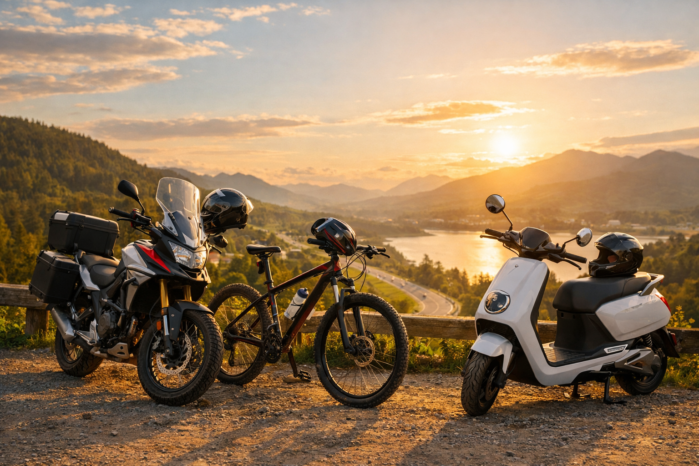

Matéria
Venda de moto usada: transferência digital, documentos e cuidados
ATPV-e, comunicação de venda, vistoria, recall e comprovantes: veja como organizar a transferência de uma motocicleta usada e reduzir pendências para os dois lados.

Acesso rastreável a 756 matérias, vídeos, guias, competições e eventos, além dos índices de atletas, marcas, assuntos e modalidades.
Todo o acervo público continua representado no manifesto e nos sitemaps. Nesta página, os links são agrupados por tipo e segmentados em blocos menores para tornar a consulta mais clara.
Conteúdo segmentado em 1 bloco(s) para facilitar navegação e leitura sem retirar nenhuma URL do acervo.
ATPV-e, comunicação de venda, vistoria, recall e comprovantes: veja como organizar a transferência de uma motocicleta usada e reduzir pendências para os dois lados.

Sensores de torque e cadência percebem movimentos diferentes. Entenda como isso altera arrancadas, subidas, autonomia e a escolha de uma bicicleta elétrica.

Casco, roubo, terceiros, franquia e indenização integral não significam a mesma coisa em todas as apólices. Veja o que comparar antes de contratar um seguro para motocicleta.

Um passeio noturno pode ter temperatura mais amena e vias menos carregadas, mas a menor visibilidade altera a leitura do piso, a percepção de distância e o tempo disponível para reagir. O roteiro precisa começar com a…

A proposta de uma naked na faixa de 300 cc parece simples: servir ao deslocamento diário sem abrir mão de desempenho para o fim de semana. Na prática, cilindrada e potência contam apenas parte da história. Ergonomia…

Frenar uma motocicleta com controle envolve percepção, aderência, condição mecânica e técnica. Não existe uma receita que elimine o risco em todos os pisos e velocidades. Este guia organiza fundamentos apresentados no…

UCI confirma que a rodada prevista para 16 de agosto em São Paulo não será realizada; etapa de Aalen encerrou a Copa do Mundo de MTB Eliminator 2026.

A Resolução Contran 955 define como levar bicicletas fora do carro. Veja o que conferir no suporte de teto ou traseiro antes de viajar.

Glenn Coldenhoff e Benjamin Garib dominaram MX1 e MX2; Willian Guimarães foi campeão da MX5 e Cesar Aponte garantiu antecipadamente a MX2JR.

Kevin Fontainha superou Maxi Scheib por 0s169 na GP1000; Mário Salles venceu a GP600 e Kaka Freire foi o melhor da 1000 Evo no GP Paraná.

Depois de dez dias, o Capital Moto Week 2026 deixa lançamentos, experiências de tecnologia, turismo, segurança viária e uma comunidade ainda mais conectada; números finais de público seguem pendentes.

Calendário da LIMERO prevê compromissos em Cerejeiras e Corumbiara durante agosto; organização ainda deve confirmar datas, pistas e horários específicos.

GP Paraná realiza neste sábado as primeiras quatro corridas da etapa de Cascavel, incluindo a Sprint da GP1000 às 16h30; confira a programação de 1º de agosto.

Final do Brasileiro de Enduro de Regularidade começou às 6h em Juiz de Fora e percorre cerca de 200 km por dia até Conceição do Ibitipoca.

Um passeio real de cerca de 180 km saindo de Curitiba, descendo a Estrada da Graciosa, almoçando em Morretes, seguindo até Antonina e voltando pela BR-277.

Regulamento da Federação Amapaense prevê provas de estrada e contrarrelógio em etapa única e um campeonato de mountain bike com seis rodadas em 2026.

Veja onde acompanhar online a Etapa da Moda do Brasileiro de Motocross 2026, com links oficiais, horários de sexta a domingo, categorias e local.

A Honda encerrou o primeiro semestre de 2026 com mais de 772 mil motocicletas emplacadas no Brasil, avanço de 11% sobre o mesmo período de 2025. O resultado ajuda a dimensionar a força das motos de baixa cilindrada na…

Santa Cruz do Capibaribe abre nesta quinta-feira a Etapa da Moda, rodada dupla do Brasileiro e do Sul-Americano com cerca de 500 pilotos de mais de 22 países.

Prova internacional de ciclismo estava prevista para começar nesta quarta-feira, 29 de julho, mas o calendário oficial da CBC marca o evento como cancelado.

Royal Enfield abriu a disputa regional pela edição limitada da Shotgun 650; lote das Américas tem 25 motos, mas horário brasileiro precisa de confirmação.

Linha para entregadores e trabalhadores de duas rodas começou a operar em 27 de julho; veja requisitos, prazos, taxas divulgadas e cuidados antes de assinar.

Edição comemorativa da Honda GL1800 Gold Wing Tour estreia em agosto com pintura exclusiva, conectividade sem fio e motor boxer de seis cilindros.

Prestação, combustível, manutenção, documentos, seguro e depreciação formam o custo real de uma motocicleta. Veja como montar uma conta mensal comparável.

Colisão na BR-116, em Curitiba, terminou com a morte de um motociclista; entenda os fatos confirmados, os riscos entre veículos pesados e o que fazer após um acidente.

Um método prático para reduzir antes da esquina, ampliar a visão e antecipar conversões, pedestres, ônibus e veículos encobertos.

No Dia Nacional do Motociclista, a TVDUASRODAS celebra quem pilota por trabalho, mobilidade, esporte ou paixão — e reforça que respeito e segurança fazem parte de toda boa viagem.

Como verificar tamanho, cinta, viseira e conservação do capacete — e por que impacto e desgaste importam mais do que uma data genérica.

Roger Vieira e Nara Faria venceram a Elite do Brasileiro de Downhill 2026; veja o top 5 masculino e os campeões já confirmados em outras categorias.

Conversor DC-DC: como ele alimenta farol, painel, buzina, USB e rastreador, como dimensionar, diagnosticar e comprar sem confundir tensão nominal com tensão máxima.

Pedalar no sentido correto, manter distância de carros estacionados e cuidar da visibilidade reduz conflitos previsíveis no trânsito urbano.

Planejar combustível, descanso, clima e local de parada reduz decisões apressadas durante uma viagem de moto.

A viagem de moto fica mais prazerosa quando o ritmo considera condições da estrada, clima, descanso e margem para imprevistos.

Veteranos do festival chegaram cedo para a abertura dos portões, enquanto a programação do primeiro dia reuniu bandas locais e atrações internacionais na Granja do Torto.

Luiz Henrique Cocuzzi e Iara Caetano Leite conquistaram os primeiros títulos nacionais no XCE Elite do Campeonato Brasileiro de MTB 2026.

Limite de carga, equilíbrio entre os lados, fixação e uma inspeção antes de sair ajudam a preservar a estabilidade da motocicleta durante a viagem.

Moto, scooter ou bicicleta: um roteiro prático para transformar deslocamentos curtos em trajetos previsíveis, seguros e integrados à cidade.

Posicionamento, espelhos, distância e leitura de cruzamentos ajudam o motociclista a reduzir conflitos com carros, ônibus, caminhões e pedestres.

Um roteiro seguro para conferir folga, limpar e lubrificar a corrente da motocicleta sem improvisos — sempre respeitando o manual do modelo.

Pista molhada pede menos velocidade, mais distância, equipamentos adequados e uma revisão rápida de pneus, freios e iluminação.

Entenda como bateria, BMS, inversor, motor, regeneração e recarga trabalham em uma moto elétrica, com a Honda WN7 como exemplo real.

O Campeonato Brasileiro de Motovelocidade 2026 já tem data e local confirmados para seu próximo encontro. A quarta etapa do MOTO1000GP está marcada para 2 de agosto, em Cascavel (PR), no Autódromo Internacional Zilmar…

A BMW Motorrad anunciou nesta segunda-feira, 20 de julho, uma nova opção para a F 900 GS Pro no mercado brasileiro. Batizada de São Paulo Yellow, a cor estreia publicamente no Capital Moto Week 2026 e chega com preço de…

O futuro das duas rodas começa a ganhar forma fora dos salões e cada vez mais perto das ruas. As motos híbridas, que combinam motor a combustão com assistência elétrica, deixaram de ser apenas estudos de engenharia e…

Uma mudança que já está nas ruas Em 2026, o mercado de motocicletas vive uma transformação silenciosa, porém profunda. Longe dos holofotes das superbikes e das disputas de velocidade, as motos urbanas de baixa e média…
.jpg)
Honda WN7 A Honda WN7 marca um momento histórico para a indústria de duas rodas. Apresentada como o primeiro modelo elétrico global da Honda, a WN7 representa muito mais do que uma nova motocicleta: ela simboliza a…

Por muitos anos tratado como um “brinquedo evoluído”, o scooter freestyle — também conhecido como kick scooter — atravessou uma transformação silenciosa e hoje ocupa um espaço sólido entre os esportes urbanos mais…

A KTM, conhecida mundialmente pelas motos off-road e pela filosofia “Ready to Race”, decidiu entrar de vez no universo das bicicletas elétricas. A novidade atende pelo nome simples de KTM Electric Cycle e, pelo menos no…

A Honda XL750 Transalp 2026 é a mais recente evolução da lendária linha Transalp — um modelo que retorna com força total para dominar o segmento mid-weight adventure (trilhas leves, estrada e viagens longas). Projetada…

Durante décadas, ciclovias foram tratadas como soluções simples: pintar faixas no asfalto, instalar placas e esperar que ciclistas se adaptassem ao espaço disponível. Hoje, esse modelo está ficando para trás. Em…

A Ducati Diavel V4 RS chega ao mercado como a interpretação mais extrema da família Diavel. Unindo design agressivo, engenharia de competição e um pacote eletrônico de ponta, a V4 RS é voltada para quem busca…

A Yamaha R15 2026 chega ao mercado reafirmando sua posição como uma das sportbikes de baixa cilindrada mais desejadas do mundo. Inspirada diretamente nas irmãs maiores da família R, como a R7 e a R1, a nova geração…

Patinetes elétricos, bicicletas elétricas e hoverboards cresceram em popularidade nos últimos anos como uma forma de ir e voltar do trabalho, da escola ou simplesmente por diversão. O relatório mais recente aponta que…

Gravel bikes em alta: a bicicleta que virou febre entre quem gosta de estrada, terra e aventura As gravel bikes deixaram de ser um nicho para se tornar uma tendência global em 2025 e 2026. Marcas tradicionais e novas…
.jpg)
Honda XRE 300 Sahara 2026: especificações, tecnologia e espírito aventureiro A Honda XRE 300 Sahara 2026 chega ao mercado como uma trail versátil e moderna, combinando aptidão para uso urbano, viagens e aventuras leves…

Honda Africa Twin 2026 chega à Europa com novo visual e tecnologia consagrada A Honda Africa Twin 2026 desembarca no mercado europeu com novas cores e grafismos, reforçando o visual moderno da big trail sem abrir mão de…

Subir uma serra de moto é um dos prazeres mais marcantes para quem ama duas rodas: curvas, visual, mirantes e aquela sensação de estar “escapando” da cidade. Mas, para a viagem ser boa, alguns cuidados são fundamentais.…

As scooters elétricas deixaram de ser apenas curiosidade de shopping e começaram a aparecer cada vez mais nas ruas. Mas será que, na prática, fazem sentido para o uso diário em cidades cheias, com trânsito pesado e…
Conteúdo segmentado em 1 bloco(s) para facilitar navegação e leitura sem retirar nenhuma URL do acervo.

O Canal Motoplay reúne em vídeo as novidades apresentadas para a linha Honda 2027, com atenção especial às motos de 300 cm³. A pauta passa pela XR 300L Tornado, pela Sahara 300 e pelas mudanças de versões e acabamento…

O canal brasileiro Turbinados - Filipe Bueno percorre o Capital Moto Week 2026, em Brasília, e mostra bastidores, estandes, público e novidades de marcas presentes no evento. O vídeo tem cerca de 15 minutos, áudio…

O canal brasileiro Gui da honda apresenta o Move Brasil 2026 e percorre as motocicletas Honda incluídas na ação. O episódio ajuda quem acompanha o mercado a identificar os modelos citados antes de procurar uma…

O canal brasileiro MotoDiário aborda a possibilidade de motocicletas híbridas, que combinam motor a combustão e assistência elétrica, e discute por que essa arquitetura voltou ao debate sobre o futuro do mercado…

No vídeo, o canal brasileiro Pedaleria mostra sete situações de manutenção em que movimentar a própria peça — em vez de forçar a ferramenta — pode facilitar o aperto e melhorar o controle do trabalho na bicicleta. Com…

O canal MotoCasal Alex e Rosi acompanha o segundo dia do Capital Moto Week 2026, em Brasília, com orientações práticas para aproveitar a programação do festival e evitar contratempos durante a visita. O episódio tem…

O Canal Motoplay apresenta a CFMOTO Ibex 450 e percorre a proposta da trail de média cilindrada, abordando o projeto, o pacote tecnológico e os itens que a posicionam entre as novidades acompanhadas pelo público…

O canal brasileiro Guilherme Moto Relax leva uma Royal Enfield Classic 500 para uma inspeção aprofundada depois de uma década de uso. O vídeo mostra a avaliação inicial do conjunto e organiza os pontos que merecem…

O canal brasileiro M. V. 7 - Motos apresenta o ranking das motocicletas mais vendidas no Brasil em junho de 2026 e compara o resultado mensal com o acumulado do primeiro semestre. Com áudio original em português…

O canal verificado RevZilla apresenta a KTM 1390 Super Adventure S EVO 2027 e explica a proposta do câmbio automatizado AMT na big trail. Em inglês, o episódio aborda os comandos, o comportamento esperado da…

O canal verificado RevZilla avalia a BMW R 12 G/S 2026 em uso diário, passando por ergonomia, desempenho em rodovia, comportamento urbano, eletrônica, freios e uma passagem por estrada de terra. O vídeo é em inglês e…

Assista à corrida principal da GP1000 na terceira etapa do MOTO1000GP 2026, realizada no Circuito dos Cristais, em Curvelo. A prova prepara o cenário para a próxima rodada do Brasileiro de Motovelocidade, em Cascavel.

A corrida completa da GP600 na etapa de Curvelo do MOTO1000GP 2026, com a disputa que antecede a quarta rodada da temporada em Cascavel.

Confira a prova da GP Light no Circuito dos Cristais, válida pela terceira etapa do Campeonato Brasileiro de Motovelocidade 2026.

O DCT já equipa modelos como Africa Twin, Gold Wing e NC 750X, mostrando que a automação não é mais exclusividade do mundo automotivo.

Chumbinho foi vítima de um grave acidente na rodovia SC-305, no Oeste de Santa Catarina, na divisa entre Campo Erê e São Lourenço do Oeste. Ele conduzia uma motocicleta quando perdeu o controle e sofreu uma queda na…

Não repita esses erros. Não pratique direção perigosa. Não desrespeite as leis de trânsito.

Em 1910, a Harley ainda era uma empresa pequena, competindo com Indian, Excelsior e outras marcas que hoje nem existem mais.


A primeira WEBTV especializada no mundo das duas rodas. Veja como foi o processo de customização da super Moto do Salão!


Evento RM Supermoto no Kartodromo de ITU - SP realiza diversas atrações para o público presente.


A Dafra lança uma moto econômica para o uso diário e oferece diversas vantagens.

Uma matéria premiada que ajuda motociclistas a obter melhores referências para circular no trânsito.

Conteúdo segmentado em 1 bloco(s) para facilitar navegação e leitura sem retirar nenhuma URL do acervo.

Motovelocidade de formação para jovens pilotos, com calendário nacional e participação latino-americana.

Agenda e resultados do campeonato brasileiro de subida de montanha com motocicletas.

Etapas, resultados e classificação do Campeonato Brasileiro de Enduro.

Classificação geral oficial após quatro etapas: Maxi Scheib lidera a GP1000, David Portuga a GP Light, Caua Rodrigues a GP600 e Joao Carneiro a Daytona 660 Cup.
 TVDUASRODASCampeonato Rondoniense de Motocross 2026 — Cerejeiras e Corumbiara
TVDUASRODASCampeonato Rondoniense de Motocross 2026 — Cerejeiras e CorumbiaraAcompanhamento das etapas de Cerejeiras e Corumbiara. Enquanto as súmulas de agosto não são publicadas, a tabela mostra o último resultado oficial disponível da LIMERO: a 4ª etapa estadual, disputada em Jaru.

Após a 8ª etapa, Enzo Lopes lidera a MX1 com 363 pontos, seis à frente de Glenn Coldenhoff; Salvador Pérez comanda a MX2 com 368 pontos.
Classificação final oficial após o Ibitipoca Off Road: Jomar Grecco é campeão da Elite; veja os três primeiros das dez categorias do Brasileiro de Enduro de Regularidade 2026.
TVDUASRODASCampeonato Amapaense de Ciclismo de Estrada, Contrarrelógio e MTB 2026Campeonato oficial com estrada e contrarrelógio em etapa única e seis etapas de MTB. A classificação oficial ainda não foi disponibilizada pela Federação na plataforma consultada; por isso não há vencedores atribuídos nesta página.

Jeffrey Herlings venceu a MXGP e assumiu a liderança do campeonato em Loket; Guillem Farres venceu a MX2.

Roger Vieira e Nara Faria venceram a Elite do Campeonato Brasileiro de Downhill 2026, encerrado no Parque das Águas Salutaris, em Paraíba do Sul. Veja o top 5 masculino e os campeões confirmados.

Nicolò Bulega lidera o WorldSBK 2026 com 491 pontos após Donington; Iker Lecuona é o segundo colocado.

Maxi Scheib lidera a SuperBike Pro após a 3ª etapa; a próxima rodada será em 26 de julho, em Interlagos.

Bruno Crivilin venceu as motos no Sertões Series Paraná; a temporada segue com o Sertões Petrobras em agosto.

Jorge Martín lidera o MotoGP 2026 após 11 etapas; Marc Márquez venceu na Alemanha e Diogo Moreira ocupa o 15º lugar.

Temporada brasileira de Rally Raid, incluindo Sertões e Sertões Series.

Resultados oficiais de Barretos e do Rally Rota Sudeste, calendário e situação da classificação do Brasileiro de Rally Baja.

Calendário, resultados e classificação do Brasileiro de Hard Enduro.
Cobertura integral das 34 classificações oficiais: resultados completos do XCE e do XCC já publicados; as 30 categorias do XCO estão identificadas e aguardam os documentos oficiais da CBC.

Calendário e resultados do campeonato nacional multimarcas para motos big trail.

Campeões, pódios e resultados oficiais do Brasileiro de BMX Racing disputado em Cuiabá, nas classes Championship, Cruiser, Challenge, Master e PCD.

Principais provas, resultados e informações do circuito Brasil Ride de mountain bike.

A temporada chega à Super Final de Interlagos com Enzo Lopes e Dean Wilson empatados na liderança da categoria PRO.
Conteúdo segmentado em 11 bloco(s) para facilitar navegação e leitura sem retirar nenhuma URL do acervo.
TVDUASRODASV Pojuca Motofest — Aves de RapinaO V Pojuca Motofest acontece de 21 a 23 de agosto de 2026, na Praça ACM, com programação oficial publicada pela Prefeitura. A grade inclui Gian Apolo, Último de Nós, Hátria, Diana Marinho e Adão Negro; na sexta, a fonte municipal atribui 23h simultaneamente a DJ Dymer e Post Memories, conflito mantido como alerta.
TVDUASRODASUiraúna Motofest 2026O cartaz do Uiraúna Motofest anuncia a edição de 2026 para 27, 28 e 29 de novembro. A lei municipal que inclui o evento no calendário de Uiraúna confirma a colaboração dos motoclubes Pássaro Preto e Canaã; local, horários, acesso, estacionamento e atrações musicais nominais ainda não foram publicados.
TVDUASRODASTerapia na Estrada de Macaé — 8 de agosto de 2026Um vídeo de divulgação indexado pela JB-RIDER registrou Terapia na Estrada em Macaé para 8 de agosto de 2026. Não foi encontrada segunda fonte específica nem serviço verificável de local, horário, atrações, acesso ou estacionamento.
TVDUASRODASTerapia na Estrada de Macaé — 15 de agosto de 2026Uma divulgação comunitária cadastrou Terapia na Estrada em Macaé para 15 de agosto de 2026, com bandas. Não foi localizada publicação do organizador, endereço, horário, serviço de acesso ou registro posterior que confirme a realização.

Maringá recebeu de 4 a 9 de agosto de 2026 a Taça Brasil de Ciclismo e Paraciclismo de Pista e, na sequência, a Track American Series. A página oficial da CBC confirma local, classes UCI, organização e modalidades; coberturas posteriores registram a realização e resultados da semana internacional.
TVDUASRODASSpeed Night Fest — “Brigui/SP”, 8 de agosto de 2026Um divulgação do evento específico registra o Speed Night Fest para 8 de agosto de 2026 e apresenta a localidade como “Brigui/SP”. Não foi localizada fonte independente que confirme se a grafia está completa ou se se refere a Birigui; a cidade foi mantida como na origem para evitar uma correção inventada, e nenhum serviço adicional foi confirmado.
TVDUASRODASSantana Motofest 2026O divulgação do evento específico do Santana Motofest informa 4 a 7 de setembro de 2026 em Santana do Ipanema/AL, enquanto a listagem geral do mesmo índice mostra 4 a 6. A Prefeitura possui registro oficial da edição de 2025, mas ainda não foi localizada publicação municipal específica de 2026; local, horários, atrações, acesso, estacionamento e organização permanecem pendentes.

O Santa Bárbara Motofest celebrou no calendário os dez anos do Motoclube Espíritos Riders entre 14 e 16 de agosto de 2026, na Praça Central de Santa Bárbara do Monte Verde/MG. Foram anunciados cinco shows, entrada franca, food trucks, exposição de motos, camping e festival de queijos no domingo.
TVDUASRODASSalvador Moto — 3 a 5 de dezembro de 2026Um divulgação do evento específico registra Salvador Moto na capital baiana de 3 a 5 de dezembro de 2026. Existe um perfil público do Salvador Moto Grupo com histórico e sede no Rio Vermelho, mas nenhuma fonte liga explicitamente esse perfil à edição; por isso sede, responsável e contato não foram transferidos como serviço do evento.

O SMJ Moto Fest está anunciado para 28 de agosto de 2026, a partir das 11h, no Centro de Eventos Cultural e Esportivo Sofia Arnholz Berger, em Santa Maria de Jetibá/ES. O divulgação do evento confirma área coberta, camping coberto, banho quente, café da manhã, troféus, expositores, alimentação, cerveja artesanal e drinks.
TVDUASRODASRaça Livre MG em São Carlos — 5 a 7 de setembro de 2026O divulgação do evento específico de Raça Livre MG anuncia o encontro em São Carlos, de 5 a 7 de setembro de 2026, com camping, chuveiros, rock, bandas e café da manhã. O material não informa local, endereço, horários, ingresso, organização, contato ou estacionamento, e nenhuma segunda fonte independente da mesma edição foi localizada. Um evento chamado Motorcycles Rock aparece na mesma cidade e período, mas não há fonte que vincule os dois; por isso, nenhum dado dele foi transferido para esta página.
TVDUASRODASPoço Fundo Moto Fest 2026O Poço Fundo Moto Fest está anunciado para 5 e 6 de setembro de 2026, na Praça da Avenida José Evilásio Assi, com dez bandas, wheeling, praça de alimentação, expositores e camping com banho quente e café da manhã. As fontes divergem no encerramento e um cabeçalho estende o período até dia 7; essas diferenças exigem confirmação final.
TVDUASRODASPepe Legal MC na Mooca — 15 de agosto de 2026Um divulgação do evento específico marcou uma atividade do Pepe Legal MC na Mooca, em São Paulo, para 15 de agosto de 2026. O site oficial confirma a história do clube no bairro e informa que o moto clube foi consagrado em 15 de agosto de 2006, mas não publica serviço desta edição; o estado concluído decorre apenas do calendário.

O Old Scooters Day 2026 foi anunciado para 22 de agosto, das 10h às 19h, na Villa Pagliato, Rua Antônio Aparecido Ferraz, 1111, em Sorocaba/SP. O site oficial confirma encontro de Vespas e Lambrettas, exposição, provas de habilidade, corrida lenta, dyno contest, discotecagem, marcas autorais e pinstriping.

O Mutum Moto Rock foi anunciado para 14 e 15 de agosto de 2026 na Praça Raul Soares, Centro de Mutum/MG. A página específica confirma entrada franca, rock ao vivo, exposição de motos antigas, expositores, alimentação, cerveja artesanal, troféus, camping gratuito coberto, banho quente e café da manhã.

O evento divulgado como Motopoint Centenário de São João Evangelista foi anunciado para 1º de agosto de 2026, das 14h às 22h, na referência chamada Rua da Prefeitura. O divulgação do evento prevê duas bandas, camping coberto gratuito, banho quente e café da manhã, mas não publica os nomes musicais, endereço numerado, entrada ou organizador.
TVDUASRODASMotofest Tombos 2026O cartaz de 2026 anuncia o Motofest Tombos para 6, 7 e 8 de novembro, com atrações nacionais e regionais, camping e praça de alimentação. Local, horários, nomes das atrações, acesso, estacionamento, organizador e contato ainda não aparecem em fonte específica verificável.

A agenda JB-Rider confirma um evento do Búfalos Moto Grupo em Marechal Floriano/ES no dia 15 de agosto de 2026, corroborando o divulgação do evento do Moto Rock. A divulgação disponível não permite confirmar local, horário utilizável, programação, acesso ou estacionamento desta edição.

O divulgação do evento da agenda marca como cancelado o Moto Fest Vargem Bonita que estava previsto para 8 de agosto de 2026, a partir das 18h, em Vargem Bonita/MG. Não foi localizada nota municipal ou da organização com local planejado, motivo, remarcação, reembolso ou outras orientações.
TVDUASRODASGP de Paraciclismo de Estrada 2026 — adiadoA CBC marcou como adiado o GP de Paraciclismo de Estrada que tinha 6 de setembro de 2026 como data anterior e município ainda a definir no estado de São Paulo. A nova data será anunciada; não há percurso, regulamento, inscrições nem serviço de público confirmado.
TVDUASRODASGP de Paraciclismo de Estrada 2026 — adiadoA CBC marcou como adiado o GP de Paraciclismo de Estrada que tinha 6 de setembro de 2026 como data anterior e município ainda a definir no estado de São Paulo. A nova data será anunciada; não há percurso, regulamento, inscrições nem serviço de público confirmado.
TVDUASRODASGP de Ciclismo de Estrada 2026 — adiadoA Confederação Brasileira de Ciclismo marcou como adiado o GP de Ciclismo de Estrada que tinha 6 de setembro de 2026 como data anterior e local ainda a definir em São Paulo. O calendário informa “nova data em breve”; não há cidade, percurso, regulamento ou inscrições vigentes para publicar.
TVDUASRODASGP de Ciclismo de Estrada 2026 — adiadoA Confederação Brasileira de Ciclismo marcou como adiado o GP de Ciclismo de Estrada que tinha 6 de setembro de 2026 como data anterior e local ainda a definir em São Paulo. O calendário informa “nova data em breve”; não há cidade, percurso, regulamento ou inscrições vigentes para publicar.
TVDUASRODASGP Goiás de Paraciclismo 2026O GP Goiás de Paraciclismo integrou o calendário oficial da CBC em 1º e 2 de agosto de 2026, em Bela Vista de Goiás/GO, na classe C4. A plataforma de inscrição identifica provas de contrarrelógio individual e resistência, e um arquivo fotográfico posterior registra o evento na mesma data e cidade.
TVDUASRODASGP Goiás de Paraciclismo 2026O GP Goiás de Paraciclismo integrou o calendário oficial da CBC em 1º e 2 de agosto de 2026, em Bela Vista de Goiás/GO, na classe C4. A plataforma de inscrição identifica provas de contrarrelógio individual e resistência, e um arquivo fotográfico posterior registra o evento na mesma data e cidade.
TVDUASRODASEncontro de Triciclo Tri-Vale e ITS em LagesTri-Vale Brasil e ITS anunciam três dias de encontro em 10, 11 e 12 de outubro de 2026, no Camping Ponte Velha, em Lages/SC. O cartaz informa estrutura para motorhomes, motos, barracas e famílias, mas não publica horários, acesso, contato ou estacionamento.
TVDUASRODASEncontro Yamaha VMAX em Mairiporã — 25 de julho de 2026Uma divulgação comunitária anunciou um encontro ligado à Yamaha VMAX em Mairiporã/SP para 25 de julho de 2026, a partir das 11h, com rock. Não foi localizada fonte do organizador, endereço, nomes das bandas, acesso, estacionamento ou confirmação posterior.
TVDUASRODASEncontro Web Riders em Mirassol — 25 de julho de 2026Uma agenda comunitária registrou Web Riders em Mirassol/SP para 25 de julho de 2026. A imagem original não estava acessível na revisão e não foi encontrada segunda publicação específica com horário, endereço, programação, organizador, acesso ou confirmação posterior.
TVDUASRODASEncontro Steel Goose em Araruama — 28 de novembro de 2026Um vídeo-divulgação do evento anuncia atividade do Steel Goose em Araruama/RJ para 28 de novembro de 2026. O site oficial confirma a história e a estrutura nacional do moto grupo, e a Prefeitura registra sua participação no Araruama Moto Rock em junho, mas nenhuma dessas fontes publica o serviço do encontro de novembro; local, horário, acesso, estacionamento e atrações seguem pendentes.
TVDUASRODASEncontro Solidário em Jaci — 2 de agosto de 2026Um divulgação do evento específico registrou um encontro identificado como “Solidário” em Jaci/SP para 2 de agosto de 2026. Não foram localizados beneficiário, forma de doação, local, horário, organização, atrações, entrada, estacionamento ou balanço posterior; o estado concluído deriva somente do fim da data.
TVDUASRODASEncontro Sinistro MC em Belford Roxo — 31 de julho de 2026Um divulgação do evento específico registrou atividade do Sinistro MC em Belford Roxo/RJ para 31 de julho de 2026. A grafia “Belfod Roxo” da peça foi normalizada para o nome oficial do município, sem alterar a URL; local, horário, acesso, atrações, estacionamento, contato e realização não foram confirmados.
TVDUASRODASEncontro Sicários MC em Ipuiúna — 15 e 16 de agosto de 2026Um divulgação do evento específico marcou encontro do Sicários MC em Ipuiúna/MG para 15 e 16 de agosto de 2026. Não foram encontrados local, horários, atrações, entrada, estacionamento, contato ou registro pós-evento em segunda fonte; o estado concluído decorre apenas do encerramento do período.
TVDUASRODASEncontro Serra Branca MC em Sumé — 26 de julho de 2026Um divulgação do evento específico registrou atividade do Serra Branca MC em Sumé/PB para 26 de julho de 2026. A leitura preliminar do material detectou “10h” e “00h”, mas não permite associar com segurança esses horários a início ou término; local, programa, acesso, estacionamento, contato e realização posterior não foram confirmados.
TVDUASRODASEncontro Sem Fronteiras MG em Santa Cruz — 26 de setembro de 2026O Sem Fronteiras MG aparece em divulgação do evento específico para 26 de setembro de 2026, às 13h, em Santa Cruz, no Rio de Janeiro. Um diretório de motoclubes corrobora a existência de um Sem Fronteiras MG no estado, mas não anuncia esta edição; local, atrações, entrada, estacionamento e contato continuam pendentes.
TVDUASRODASEncontro Rota 064 MC em Rio Verde — 19 e 20 de setembro de 2026Um divulgação do evento específico anuncia o Rota 064 MC em Rio Verde/GO para 19 e 20 de setembro de 2026 e indica área de alimentação. Não foi localizada fonte independente da edição com local, horários, atrações, entrada, estacionamento ou contato; resultados empresariais homônimos foram descartados por falta de vínculo com o moto clube.
TVDUASRODASEncontro Rock Chopper MC em Rio das Ostras — 17 de outubro de 2026Um divulgação do evento específico anuncia atividade do Rock Chopper MC em Rio das Ostras/RJ para 17 de outubro de 2026 e indica rock. Local, horário, bandas, acesso, estacionamento e contato não foram confirmados em segunda fonte; resultados de eventos do grupo em Saquarema e de outros encontros de Rio das Ostras foram descartados.
TVDUASRODASEncontro Resiliência MC em Fervedouro — 21 e 22 de novembro de 2026O Resiliência MC aparece em divulgação do evento específico para 21 e 22 de novembro de 2026, em Fervedouro/MG. Nenhuma segunda fonte independente da edição foi localizada, e local, horários, atrações, entrada, estacionamento e contato permanecem pendentes.
TVDUASRODASEncontro Rat Bike em Salto Grande — 5 a 7 de setembro de 2026Um vídeo-divulgação do evento específico anuncia o Rat Bike em Salto Grande/SP de 5 a 7 de setembro de 2026, com área de camping e os telefones (18) 98158-0884 e (14) 99849-7688. Não foi localizada segunda fonte independente com local, horários, entrada, estacionamento ou programação.
TVDUASRODASEncontro Rabugentos MC no Rio de Janeiro — 8 de novembro de 2026O Rabugentos MC anuncia encontro no Rio de Janeiro em 8 de novembro de 2026, a partir das 12h, com rock e quatro telefones de contato no divulgação do evento. Uma listagem federativa corrobora a existência do Rabugentos MC no estado, mas local, endereço, entrada e estacionamento desta edição ainda não foram publicados de forma verificável.
TVDUASRODASEncontro Professores MC em Vila Velha — 17 de outubro de 2026Um vídeo-divulgação do evento anuncia atividade do Professores MC em Vila Velha/ES para 17 de outubro de 2026. Um diretório nacional de motoclubes corrobora o nome do grupo e a cidade no singular, permitindo corrigir a grafia “Vila Velhas”; local, horário, acesso, contato e programação continuam sem confirmação pública específica.
TVDUASRODASEncontro Pentecostes MC em Potirendaba — 5 e 6 de setembro de 2026O Pentecostes MC aparece em divulgação do evento específico para 5 e 6 de setembro de 2026, em Potirendaba/SP, com indicação de atividade gratuita. Não foram localizados local detalhado, horários, contato, estacionamento ou programação desta edição em uma segunda fonte independente.
TVDUASRODASEncontro Peaky Blinders MG em Terezinha — 6 de setembro de 2026Um divulgação do evento específico anuncia encontro do Peaky Blinders MG em Terezinha/PE para 6 de setembro de 2026. A revisão confirmou somente nome, cidade e data: local detalhado, horário, entrada, estacionamento, contato e programação ainda não aparecem de forma verificável nas fontes públicas localizadas.
TVDUASRODASECDR 2026 — 2º El Camino Drag RaceO 2º El Camino Drag Race acontece em 21 e 22 de agosto de 2026, das 8h às 18h, no Autódromo Internacional de Campo Grande. A programação recente confirma testes e classificação na sexta, disputas oficiais no sábado, Drag Race de Harley-Davidson, Motohabilidade, boxes, food trucks, expositores e atividades noturnas no Old Sheep e Road House. A classificação como concluída decorre apenas da passagem da data final e não comprova que o evento tenha sido realizado.
TVDUASRODASCopa Recife de BMX 2026A Confederação Brasileira de Ciclismo mantém a Copa Recife de BMX no calendário oficial para 29 de novembro de 2026, em Recife/PE, na modalidade BMX Racing, válida pelo Ranking CBC na classe C5. Pista, horários, regulamento, inscrições e acesso do público ainda não foram publicados na ficha indexada.
TVDUASRODASCopa Recife de BMX 2026A Confederação Brasileira de Ciclismo mantém a Copa Recife de BMX no calendário oficial para 29 de novembro de 2026, em Recife/PE, na modalidade BMX Racing, válida pelo Ranking CBC na classe C5. Pista, horários, regulamento, inscrições e acesso do público ainda não foram publicados na ficha indexada.

O divulgação do evento do Cena Camping anuncia encontro em 22 e 23 de agosto de 2026, com início ao meio-dia, na Cachoeira de Natuba/PB, sob divulgação do perfil @cenabikerpe. Não foram localizados endereço preciso, horário de encerramento, inscrição, valor, programação ou regra de estacionamento para esta edição.

A celebração conjunta em Contagem foi divulgada para 8 de agosto de 2026, das 14h às 23h, reunindo os aniversários de Skulls on the Ride/Caveiras na Estrada MC, Biela Forjada MC e Confraria das Águias MC. Uma segunda agenda confirma data e cidade, mas local, programação, acesso e estacionamento não foram publicados.

O aniversário do Santificados MC foi divulgado para 16 de agosto de 2026, das 10h às 22h, em Contagem/MG. O site e o Instagram do clube confirmam seus canais oficiais, enquanto agendas motociclísticas corroboram data e cidade; local, programação, acesso e estacionamento não foram publicados em fontes públicas rastreáveis.
TVDUASRODASAniversário das facções do Zapata MC em Embu-GuaçuO Zapata MC anuncia a comemoração de aniversários de suas facções em Embu-Guaçu/SP de 19 de setembro, às 12h, até 20 de setembro de 2026, às 16h. O cartaz informa Estrada da Luminosa, 3500, acesso por R$ 10 ou dois litros de leite, camping, expositores e show dos Silverockers.
TVDUASRODAS9º aniversário do Trike Brasil MC e 5º Aperto de Mão Tri-ValeO encontro do Trike Brasil MC de Resende com o Tri-Vale será realizado de 28 a 30 de agosto de 2026 no Parque Homero Penha de Andrade, em Minduri/MG. Fonte local que credita a Prefeitura de Minduri confirma programação diária, motociata, shows, carros antigos, missa e acesso mediante 1 kg de alimento.

O aniversário do Ronin of the Road foi realizado em 16 de agosto de 2026, em Itabira/MG. Reportagem publicada após o evento confirma shows de Tio Chico e Savassi, praça de alimentação, organização conjunta com a Acobac e público superior a 5 mil pessoas segundo os organizadores.
TVDUASRODAS8º Aniversário do MC Ronin of the Road — ItabiraO 8º aniversário do MC Ronin of the Road ocorreu em 16 de agosto de 2026, das 10h às 22h, na Praça do Campestre, em Itabira/MG. Reportagem publicada depois do evento confirma Tio Chico, Savassi, praça de alimentação e participação de motociclistas de vários estados; segundo os organizadores, mais de cinco mil pessoas passaram pelo encontro.

O 7º Encontro de Motos e Carros Clássicos de Rio Acima foi anunciado para 15 de agosto de 2026, a partir das 9h, no Condomínio Canto das Águas. O serviço publicado prevê exposição selecionada de veículos, show da banda A Tretta, food trucks, gastronomia, cerveja artesanal e entrada solidária com cadastro digital.

A comemoração conjunta dos sete anos do MC Levante VIII e quatro anos do MG Rangers Wild West foi anunciada para 8 de agosto de 2026, das 10h às 23h, no Shopping Green Plaza, região da Pampulha, em Belo Horizonte. A divulgação prevê quatro bandas, alimentação, sorteios e troféus.
TVDUASRODAS6º aniversário do MC Renascidos da IrmandadeO 6º aniversário do MC Renascidos da Irmandade foi anunciado para 22 de agosto de 2026, a partir das 14h, na sede dos Dignos da Estrada MC, em Areia Branca, Belford Roxo. O cartaz informa escudamento, caldos 0800, bebidas, expositores, música e três contatos; como a checagem ocorreu no próprio dia, a realização ainda não foi confirmada. A classificação como concluída decorre apenas da passagem da data final e não comprova que o evento tenha sido realizado.
TVDUASRODAS6º Aniversário do Guardião do Destino MFO 6º aniversário do Guardião do Destino MF foi anunciado para 22 de agosto de 2026, a partir das 13h, no Jardim dos Ipês, em Salto de Pirapora/SP. O divulgação do evento traz endereço, shows de André Barbosa e Dino’s Rock Acústico, expositores, alimentação, troféus e arrecadação de ração; não informa contato, estacionamento nem condição geral de entrada. A classificação como concluída decorre apenas da passagem da data final e não comprova que o evento tenha sido realizado.

O quinto aniversário das Valentinas do Asfalto está confirmado para 23 de agosto de 2026, das 11h às 18h, no Underground Pub, Avenida Itaú, 540, Dom Cabral, em Belo Horizonte/MG. A entrada gratuita é emitida pela Sympla; quatro bandas, flash tattoo, tranças e campanha de doação integram a programação publicada.

Fontes específicas situam o 5º Moto Fest de Bom Sucesso em 21 e 22 de agosto de 2026, na praça central identificada como Praça da Padroeira. A programação divulgou shows e tributos de rock, exposição de motos, alimentação, cerveja artesanal, expositores, camping gratuito coberto, banho quente e café da manhã.

O 5º Encontro de Motociclistas de Matozinhos foi programado para 14 e 15 de agosto de 2026 na Praça do Rosário, no Centro. Fontes locais confirmam entrada gratuita, praça de alimentação, exposição de motos e oito shows, dentro da programação comemorativa dos 203 anos do município.
TVDUASRODAS5º Encontro de Motociclistas de MatozinhosO 5º Encontro de Motociclistas de Matozinhos ocorreu em 14 e 15 de agosto de 2026, no entorno da Praça do Rosário, com entrada gratuita, shows de rock, praça de alimentação e exposição de motos. A Prefeitura publicou chamamento para barracas e, depois das datas, registrou que o encontro movimentou o fim de semana.

O 5º Dragon Moto Fest foi anunciado para 22 de agosto de 2026, das 13h às 23h, na Praça Doutor Carlos Marques, conhecida como Praça dos Recrutas, no Calafate, em Belo Horizonte/MG. A divulgação específica reúne três bandas, alimentação, expositores, mostra de motos e campanha voluntária de alimentos.

O 4º Motofest Vem pro Ride está confirmado para 29 e 30 de agosto de 2026 no Centro Universitário Arnaldo — Campus Pilar, em Belo Horizonte/MG. A página oficial na Sympla informa entrada gratuita mediante ingresso antecipado, seis bandas, exposição de motos, marcas, serviços, gastronomia e espaço de convivência.
TVDUASRODAS4º Encontro Xorete Moto GrupoO 4º Encontro Xorete Moto Grupo está anunciado para 12 de setembro de 2026, a partir das 12h, em Itatiaia/RJ. O cartaz indica Rua Wanderbilt Duarte de Barros, ao lado da quadra de grama sintética, show de Thay Melo e acesso solidário com dois produtos de higiene.

A organização cancelou a edição 2026 do Passos Moto Festival, que estava prevista para 21 a 23 de agosto no Parque de Exposições de Passos/MG. A nota divulgada em julho menciona força maior e a preservação da qualidade, estrutura, segurança e experiência do público; não há programação ou acesso ativo.
TVDUASRODAS2º Moto Fest Trovões do AsfaltoO 2º Moto Fest Trovões do Asfalto está anunciado para 9 a 11 de outubro de 2026, em Ponte do Silva, Manhuaçu/MG. A agenda Mototour confirma o período; o cartaz contém referências internas a 16, 17 e 18 de outubro que conflitam com o cabeçalho e parecem reaproveitar o serviço da edição de 2025.
TVDUASRODAS2º Moto Fest Petrolândia 2026O 2º Moto Fest Petrolândia está anunciado para 25 e 26 de setembro de 2026, na Orla Fluvial. O calendário oficial do Biquíni confirma o show de 26 de setembro; a programação mais recente também lista Vapor Barato, Estrada Norte e Geração Replay, embora uma publicação anterior cite Os Brasas no lugar desta última atração.
TVDUASRODAS2º Itamarandiba MotorockO cartaz identifica o evento como 2º Itamarandiba Motorock, promovido pelo Águias do Redentor MC em 22 de agosto de 2026. A arte confirma apoio municipal, mas é apenas um aviso de data: horário, local, entrada, estacionamento, contato e programação não aparecem e nenhuma segunda fonte específica foi localizada. A classificação como concluída decorre apenas da passagem da data final e não comprova que o evento tenha sido realizado.
TVDUASRODAS2º Espinosa Moto RockO 2º Espinosa Moto Rock foi confirmado para 21 e 22 de agosto de 2026 na Praça da Liberdade, em Espinosa. A Prefeitura publicou o chamamento e o resultado final para os espaços temporários de alimentação e bebidas; o Jornal Panorama Minas confirmou as datas, o local e Rock Beats como primeira atração anunciada. Horários, entrada e estacionamento não estavam informados nas fontes consultadas. A classificação como concluída decorre apenas da passagem da data final e não comprova que o evento tenha sido realizado.
TVDUASRODAS2º Chã Grande Motofest 2026O 2º Chã Grande Motofest foi anunciado para 21 e 22 de agosto de 2026, com shows de rock, atrações culturais, feijoada, café da manhã e camping marcados no divulgação do evento como “0800”. Em 22 de agosto a agenda está no último dia divulgado, mas não houve confirmação em tempo real da realização nem publicação atual com local, horários e contato. A classificação como concluída decorre apenas da passagem da data final e não comprova que o evento tenha sido realizado.

O MC Estradeiros da Liberdade comemora 28 anos em 30 de agosto de 2026, das 14h às 23h, em Santos/SP, com a Banda ENVO. Uma agenda específica situa o evento na sede do clube; o site oficial publica Rua Carvalho de Mendonça, 599, mas recomenda-se confirmar se esse é o acesso usado na comemoração.
TVDUASRODAS26º Encontro Nacional de Motociclistas de Pedra Bela — registro em verificaçãoEsta URL é preservada como registro de correção. Até 23 de agosto de 2026, não foi localizada fonte específica do organizador, da Prefeitura ou de agenda atual que confirme um 26º Encontro Nacional de Motociclistas em Pedra Bela em 11 de setembro de 2026. As fontes encontradas comprovam a tradição histórica do Kaypira MC, mas não autorizam publicar data, local ou programação como serviço atual.

O Foragidos MC anunciou a comemoração de 25 anos em Três Corações/MG para 22 de agosto de 2026, a partir das 19h. A divulgação direciona ao site e ao Instagram oficiais do clube, mas não informa local, programação, acesso, estacionamento ou contato específico da edição.

O primeiro aniversário do Área 51 MC Caratinga foi anunciado para 16 de agosto de 2026, a partir das 8h30, na Avenida João Caetano do Nascimento, 1216, bairro Limoeiro, anexo ao Posto São Rafael. A JB-RIDER confirma a data e a cidade, mas não há programação detalhada nem balanço posterior.
TVDUASRODAS1º aniversário do Moto Grupo UAIO Moto Grupo UAI anuncia seu primeiro aniversário para 13 de setembro de 2026, às 10h, na Praça Jorge Frange, em Uberaba/MG. O cartaz informa que novos detalhes ainda seriam divulgados; não há programação, acesso, contato ou estacionamento confirmados.
TVDUASRODAS1º Ultra Moto Fest Alcobaça 2026O 1º Ultra Moto Fest foi realizado na Orla da Praia do Centro, em Alcobaça/BA, com shows, encontro dos motociclistas dos nove estados do Nordeste, expositores, alimentação, camping e estacionamento. A divulgação previa 14 a 16 de agosto; a cobertura posterior registra a programação cultural e musical em 14 e 15 e o encerramento no sábado à noite.

O 1º Motorock Catraca's MC foi anunciado para 22 de agosto de 2026, das 16h às 23h59, na Praça do Bom Jardim, em Ipatinga/MG. A publicação específica confirma seis bandas, venda de comidas e bebidas, exposição de motos e área de camping.

O 1º Motopoint Os Pé Vermeio do Asfalto foi anunciado para 16 de agosto de 2026, das 10h às 18h, na Rua Fernão Dias, em frente à ACIRPA e na entrada de Itatiaiuçu/MG. A divulgação ainda aguardava cartaz final; não foram localizados programação, acesso, contato ou balanço posterior.

O 1º Motofest de Monsenhor João Alexandre foi anunciado para 7 de agosto de 2026, das 19h às 2h, no distrito de Cláudio/MG. A divulgação preliminar previa camping coberto, chuveiros quentes, praça de alimentação filantrópica, rock e troféus; não foi localizado cartaz final nem confirmação posterior.

O encontro foi anunciado para 8 de agosto de 2026, a partir das 9h, em Imbé/RS, com música, food trucks, produtos motociclísticos, artesanato e acesso mediante 1 kg de alimento. As fontes concordam em título, cidade e início, mas divergem no endereço e no horário final; o participante deve confirmar o local com @amigosdoasfaltotramandai.

O 1º Inimutaba Motofest foi anunciado para 15 de agosto de 2026, das 10h à meia-noite, com shows, camping ao lado do evento mediante inscrição prévia e café da manhã no domingo. Jacaré Moto e Feti Moto confirmam o serviço básico, mas não informam endereço, organizador, contato, entrada ou estacionamento.

O 19º aniversário do Moto Clube Irados Porcos Selvagens ocorre de 21 a 23 de agosto de 2026 no Ginásio Gonzagão, em Santa Rita de Ouro Preto. Duas páginas específicas confirmam camping coberto, chuveiro quente, café de domingo, churrasco compartilhado, entrada franca e shows de Maurinho Santos Trio, Haro Rock, Overflow e Rock Rotom.
TVDUASRODAS19º Encontro de Motociclistas de Mombuca — Rafard MCO encontro do Rafard MC em Mombuca, originalmente anunciado para 16 a 18 de outubro de 2026, está marcado como “CANCELADO” na agenda atual do Mototour. A página permanece preservada para registrar a mudança; camping, chuveiros, café da manhã, praça de alimentação, rock e expositores pertencem apenas ao anúncio original e não devem ser tratados como programação ativa.

Mariana recebe de 28 a 30 de agosto de 2026 o 17º Encontro Nacional de Motociclistas e os 19 anos do Vira Latas Moto Clube, na Praça Gomes Freire. Imprensa local, Feti Moto e contratos municipais confirmam datas, local, estrutura e uma programação de rock com onze apresentações.

O 16º aniversário do Predadores das Gerais foi divulgado para 2 de agosto de 2026, das 10h às 18h, no Underground Black Pub, Avenida Itaú, 540, Dom Cabral, em Belo Horizonte. A entrada era gratuita, para maiores de 18 anos, com três bandas e campanha voluntária de alimentos.

O 152º BH Motopoint foi anunciado para 11 de agosto de 2026, às 19h30, no Espaço VIP, Avenida Babita Camargos, 199, Cidade Industrial, em Contagem/MG. A agenda informa entrada franca, estacionamento interno de motos, DJ Charlin, churrasco 0800 e feira; não foi localizada confirmação posterior da realização.

O cadastro e o divulgação do evento da agenda identificam como cancelado o 13º aniversário do Revolucionários de Minas MC, antes previsto para 15 de agosto de 2026, das 13h às 22h, na Cervejaria Black Donkey, em Ubá/MG. Não foi localizada uma segunda nota pública com motivo, nova data ou orientação ao público.
TVDUASRODAS12º Encontro de Motociclistas de PerdõesO cartaz específico do 12º Encontro de Motociclistas de Perdões confirma a edição e as datas de 11 e 12 de setembro de 2026, em Perdões/MG. O material é um save the date: local, horários, programação, regra de entrada, estacionamento e contato ainda não foram publicados nas fontes consultadas.
TVDUASRODAS12 anos do Cowboys do Vento MCO Cowboys do Vento MC anunciou a comemoração de 12 anos para 22 de agosto de 2026, em sua sede na Rua Boa Vista, 100, Costa Azul, Matinhos/PR. O cartaz divulga rango 0800 com costela fogo de chão, bandas, papo biker, sinuca, expositores, flash tattoo, camping e o contato (41) 99781-4133; o horário de início e a condição de entrada não aparecem. A classificação como concluída decorre apenas da passagem da data final e não comprova que o evento tenha sido realizado.

O 11º aniversário do Moto Clube Kranios Kromados foi anunciado para 22 de agosto de 2026, das 13h às 23h59, na Estrada de Jacarepiá, 2201, bairro Guarani, em Saquarema/RJ. A Mototour confirma título, data e cidade; não foi localizada cobertura posterior da realização.
TVDUASRODASV Motociata de DumontA V Motociata de Dumont/SP está anunciada para 12 de outubro de 2026. O cartaz específico confirma título, edição, data e cidade, com iconografia mariana associada à ocasião, mas não publica horário, percurso, ponto de encontro, organizador, contato ou regra de participação.
TVDUASRODASPesqueira Moto Rock 2026O Pesqueira Moto Rock está anunciado para 27, 28 e 29 de novembro de 2026, com realização indicada da União Motociclística de Pesqueira. O cartaz promete três dias de amizade e rock, camping, alimentação, bandas, estande de acessórios, troféus, brindes e quartos com ar-condicionado, mas ainda não informa local, horários ou contatos.
TVDUASRODASNIVER TRIPLOO cadastro específico marcou “Niver Triplo” em São Pedro da Aldeia/RJ para 2 de agosto de 2026. A extração anterior encontrou a marcação 16h30 e menção a expositores, mas não identificou homenageados ou local; a imagem original hoje está indisponível e não apareceu confirmação independente da edição ou de sua realização.
TVDUASRODASMundiças Moto Grupo — O Chamado da EstradaA página específica associou o Mundiças Moto Grupo e o tema “O Chamado da Estrada” a Nova Pauliceia, em Gavião Peixoto/SP, no dia 9 de agosto de 2026. A extração anterior indicava entrada franca, rock e shows, mas o arquivo original está indisponível e não foi localizada confirmação independente da realização ou do serviço detalhado.
TVDUASRODASMotorock em Turmalina — 25 de julho de 2026A página preserva o anúncio de Motorock em Turmalina/MG para 25 de julho de 2026. O arquivo específico de origem estava indisponível na revisão e nenhuma segunda fonte da edição foi localizada; por isso, local, horário, organização, atrações e realização não podem ser afirmados além do registro original de cidade e data.
TVDUASRODASMotorock Macaúbas — 8 de agosto de 2026Esta página preserva a divulgação do Motorock em Macaúbas/BA para 8 de agosto de 2026, com camping, rock e troféus associados ao anúncio. O arquivo da arte estava indisponível na revisão e não surgiu confirmação independente; outra página cobre 7 e 8 de agosto, mas os registros permanecem separados porque sua relação não foi esclarecida.
TVDUASRODASMotorock Macaúbas — 7 e 8 de agosto de 2026Esta página preserva a divulgação do Motorock em Macaúbas/BA para 7 e 8 de agosto de 2026. O arquivo específico estava indisponível na revisão e não foi encontrada fonte independente da edição; existe outra página para 8 de agosto, mas não há evidência suficiente para combinar os dois registros ou transferir informações entre eles.
TVDUASRODASMotocafé em Jales — 25 de julho de 2026A página preserva o anúncio de um Motocafé em Jales/SP para 25 de julho de 2026. O arquivo específico de origem estava indisponível na revisão e as buscas em canais municipais e imprensa local não localizaram confirmação da edição, local, horário, programação ou realização.
TVDUASRODASMoto Fest Lagoinha 2026O divulgação do evento do Moto Fest Lagoinha anuncia o encontro em São José do Rio Preto/SP para 21 de novembro de 2026. A peça confirma rock com a banda Solarock, food truck com preço acessível, orientações de pilotagem, deslocamento de motocicletas e uma proposta de amizade e fé; horário, espaço exato, contato, acesso e estacionamento ainda não foram publicados.
TVDUASRODASMoto FeraA página original cadastrou o Moto Fera em Jacareí/SP para 15 de agosto de 2026 e a extração anterior mencionava área de alimentação. Uma segunda página de 2026 anuncia evento com o mesmo nome e data na Chácara Santo Antônio, em Santa Branca/SP; como a imagem da página de Jacareí está indisponível, não há prova suficiente de que sejam o mesmo encontro e o endereço divergente não foi transferido.
TVDUASRODASMoto Clube de MacaéO divulgação do evento anuncia o MC Macaé em Macaé/RJ para 22 de agosto de 2026. Um cadastro atual corrobora o nome Moto Clube de Macaé e publica Instagram e telefone do clube, mas não confirma local, horário, programação ou realização desta edição.
TVDUASRODASMoto Club de CamposO divulgação do evento anuncia MC Campos em Campos dos Goytacazes/RJ em 24 e 25 de julho de 2026. Um diretório motociclístico corrobora a identidade do Moto Club de Campos e fornece canais de contato, mas endereço cadastral, história e contato do clube não confirmam o local nem a realização desta edição.
TVDUASRODASMoto Café 2026 de Santópolis do AguapeíO Moto Café 2026 de Santópolis do Aguapeí/SP está anunciado para 20 de setembro, no local identificado no cartaz como Rodeio. A Família do Asfalto MG divulga café da manhã solidário, exposição de motos, música ao vivo, praça de alimentação e feira livre, com pedido de 1 kg de alimento não perecível.
TVDUASRODASMoto + Rock & Amizade — Dia Nacional do Motociclista 2026O Moto + Rock & Amizade foi anunciado para 25 de julho de 2026, a partir das 10h, no Restaurante Coqueiros, na MG-431, km 57, em Itaúna/MG. O cadastro específico informa entrada gratuita, rock ao vivo, cardápio com preço biker, espaço kids e troféu para clubes inscritos. Como não foi localizado balanço posterior, o estado concluído decorre apenas do encerramento da data.
TVDUASRODASMissa dos Motociclistas de Volta RedondaA página específica registra uma Missa dos Motociclistas em Volta Redonda/RJ para 27 de julho de 2026. A imagem original hoje está indisponível e não foi encontrada publicação da edição que confirme realização, horário, igreja, concentração, responsável ou serviço ao público.
TVDUASRODASMissa dos Motociclistas de Catas AltasA agenda específica vinculou uma Missa dos Motociclistas a Catas Altas/MG em 26 de julho de 2026. O divulgação do evento original hoje está indisponível e as buscas em canais municipais, religiosos e motociclísticos não localizaram horário, igreja, celebrante, concentração ou confirmação de realização da edição.
TVDUASRODASMajestade MCA página específica associa o Majestade MC a Cruzeiro/SP em 1º de agosto de 2026 e a extração arquivada mencionava alimento em uma ação ou condição solidária. A imagem original hoje está indisponível e não foi localizada segunda fonte da edição nem registro de realização; horário, local e regra de acesso continuam sem confirmação.
TVDUASRODASMaceió Moto FestO Maceió Moto Fest tem edição divulgada para 27 a 30 de agosto de 2026, em Maceió/AL. A data foi conferida no divulgação do evento específico; local, horários e programação de 2026 ainda precisam de confirmação no perfil oficial antes da viagem.
TVDUASRODASMG Viramundo Rasga Chão — Rio Branco 2026A página preserva a divulgação de um encontro associado ao MG Viramundo Rasga Chão em Rio Branco/AC, com período de 14 a 16 de agosto de 2026. O arquivo específico de origem estava indisponível na revisão e nenhuma segunda fonte da edição foi localizada; o término das datas não comprova que o evento ocorreu.
TVDUASRODASMC Águias de CristoO divulgação do evento preservado anuncia o MC Águias de Cristo em Divino/MG em 25 de julho de 2026. Fontes oficiais confirmam a identidade e a presença nacional do motoclube, mas não foi localizada publicação do núcleo de Divino com local, horário, programação ou confirmação de realização.
TVDUASRODASMC Mal EncaradoO MC Mal Encarado tem encontro divulgado em Castelo/ES de 9 a 11 de outubro de 2026, com bandas e rock mencionados no divulgação do evento. Imprensa estadual documenta uma edição anterior do mesmo clube em Castelo, mas local, horários, atrações nominais, contato e acesso de 2026 ainda não foram confirmados.
TVDUASRODASMC Eu, Gata e Cão FielO divulgação do evento registra MC Eu, Gata e Cão Fiel em Macaé/RJ em 22 de agosto de 2026, às 13h. Diretório estadual e reportagem histórica confirmam a identidade e a trajetória do clube, mas não foi localizada fonte independente com local, programação ou confirmação de realização desta edição.
TVDUASRODASMC Brucutu’sMC Brucutu’s tem encontro divulgado em Bom Jesus do Amparo/MG de 4 a 6 de setembro de 2026. A edição permanece agendada, mas endereço, horários, programação, contato, ingresso e estrutura ainda não foram confirmados fora do divulgação do evento específico.
TVDUASRODASMC Anjos da EstradaMC Anjos da Estrada foi divulgado em Belo Horizonte/MG para 22 de agosto de 2026, com rock e shows. O divulgação do evento contém vários horários, mas a atividade correspondente a cada um não pôde ser estabelecida; local, atrações nominais, acesso e confirmação de realização seguem sem fonte independente.
TVDUASRODASLobos do Asfalto MC de Jardim AméricaO Lobos do Asfalto MC de Jardim América tem encontro divulgado para 6 de setembro de 2026, às 14h, com bandas e troféus. Outras fontes confirmam a atuação do clube no bairro, mas o endereço e a programação de um encontro mensal diferente não foram reaproveitados nesta edição.
TVDUASRODASLobos MC da FronteiraLobos MC da Fronteira tem encontro divulgado em Carlópolis/PR para 10 de outubro de 2026, com camping, café da manhã, bandas, troféus e estacionamento mencionados no divulgação do evento. Imprensa local e o registro da edição anterior corroboram a identidade do clube, mas local exato, horário e acesso de 2026 ainda precisam ser confirmados.
TVDUASRODASLobos Cinzentos MCO divulgação do evento registra Lobos Cinzentos MC em Salvador/BA em 8 de agosto de 2026, às 19h30. Diretórios motociclísticos corroboram a identidade do clube em Salvador e fornecem contato, mas não confirmam endereço, programação ou realização desta edição.
TVDUASRODASLady Rider MGLady Rider MG foi divulgada para 15 de agosto de 2026 no Jaçanã, distrito de São Paulo/SP, com acessórios e troféus mencionados no divulgação do evento. Horário, endereço detalhado, acesso, estacionamento e confirmação de realização não foram encontrados em fonte independente.
TVDUASRODASLEM Moto Fest 2026A página oficial do LEM Rock Clube confirma o LEM Moto Fest 2026 na Avenida Kiichiro Murata, Jardim Imperial, em Luís Eduardo Magalhães/BA, com início em 21 de agosto às 8h e término cadastrado em 22 de agosto à 0h. O texto chama a programação de dois dias, mas não publica grade de bandas nem esclarece a aparente diferença entre essa descrição e o intervalo de horário.
TVDUASRODASKveiras do AmanhecerA página preserva a divulgação de Kveiras do Amanhecer em Belo Horizonte/MG para 25 de julho de 2026. A mídia específica confirma nome, cidade e data, mas não foi localizada uma publicação independente do organizador com endereço, horário, programação ou confirmação posterior de realização.
TVDUASRODASKM 125 MCO encontro do KM 125 MC está divulgado para 18 e 19 de setembro de 2026 na Rua Dr. Edgar Alvarenga, 200, em Campos dos Goytacazes/RJ. O divulgação do evento anuncia camping, chuveiros, café da manhã, rock, shows e bandas; registros municipais históricos ajudam a normalizar o bairro como Parque Tropical, mas não substituem o serviço atual.
TVDUASRODASJaguar Negro MC e The Steel Skulls MCdivulgação do evento e vídeo específicos associam Jaguar Negro MC e The Steel Skulls MC a uma atividade em Belo Horizonte/MG em 8 de agosto de 2026. A data já passou, mas nenhuma fonte independente confirmou a realização ou forneceu local, horário, contato, entrada e programação.
TVDUASRODASIrmãos das Sombras MC — Senador VasconcelosA página canônica preserva a divulgação dos Irmãos das Sombras MC em Senador Vasconcelos, Rio de Janeiro, para 1º de agosto de 2026, com sorteios. A data já passou, mas não foi localizada confirmação independente da realização nem endereço, horário ou condições de acesso.
TVDUASRODASIrmãos das Sombras MC — Rio de JaneiroEsta URL preserva um cadastro duplicado da atividade dos Irmãos das Sombras MC em 1º de agosto de 2026. “Rio de Janerio” é erro de grafia no slug e na fonte; a versão geograficamente mais precisa aponta Senador Vasconcelos, no Rio de Janeiro, sem confirmar endereço, horário ou realização.
TVDUASRODASInhapi Moto FestO Inhapi Moto Fest aparece em divulgação do evento específico para 13 a 15 de novembro de 2026. A listagem corrente também traz uma versão de 13 a 14, e as fontes municipais encontradas tratam apenas da edição de 2025; por isso, período definitivo, organização e serviço de 2026 permanecem pendentes.
TVDUASRODASIndian Soul MCA página anuncia atividade do Indian Soul MC em Franca/SP para 26 de setembro de 2026, com área de camping. A agenda corrente também exibe 25 e 26 de setembro; a identidade do clube e contatos públicos são corroborados, mas período definitivo, local, horários e condições de acesso ainda precisam de confirmação.
TVDUASRODASInauguração da subsede Maricá do Cruz de Ferro MC BrasilO Cruz de Ferro MC Brasil anunciou a inauguração de sua subsede em Maricá para 23 de agosto de 2026, às 12h, na Estação do Rock, identificada no cartaz como sede do Moto Clube Ponta Negra. Endereço detalhado, contato, entrada, estacionamento e programação artística não foram informados.
TVDUASRODASInauguração da base do 7.62 Moto ClubeA divulgação se refere à inauguração da base do 7.62 Moto Clube em Araquari/SC, em 10 de outubro de 2026, às 15h. A agenda Fire Souls corrige a cidade grafada como Araguari no cadastro original; o endereço da base, a entrada e o estacionamento ainda não foram publicados nas fontes localizadas.
TVDUASRODASImperador do Asfalto MCUm divulgação do evento específico divulgou atividade do Imperador do Asfalto MC em Porto Real/RJ para 26 de julho de 2026, com rock. A data já passou, mas nenhuma fonte independente confirmou a realização, o local, os horários ou as condições de acesso.
TVDUASRODASIlha MC de Ilha do Governador — 28 de julhoA página preserva um divulgação do evento do Ilha MC para 28 de julho de 2026 na Ilha do Governador, mas a agenda corrente passou a exibir uma atividade do mesmo clube em 15 de agosto. Sem fonte independente que explique a mudança, a data de 28 de julho não deve ser apresentada como realização confirmada.
TVDUASRODASIaçu Moto FestA agenda comunitária anuncia o Iaçu Moto Fest de 9 a 11 de outubro de 2026, com bandas. A própria listagem associa Guardiões a Iaçu nas mesmas datas, mas nenhuma publicação atual do organizador ou do município confirmou local, horários, entrada ou programação nominal.
TVDUASRODASIati Moto Fest — 7 de agostoEste registro de 7 e 8 de agosto de 2026 é preservado porque possui divulgação do evento próprio, mas a publicação independente encontrada para o 12º Iati Moto Fest confirma a edição nos dias 14 e 15. Não há base para afirmar que um segundo evento ocorreu em 7 e 8 de agosto.
TVDUASRODASITSA página preserva a divulgação de ITS em Timburi/SP para 13 a 15 de agosto de 2026. A agenda corrente da mesma fonte também passou a exibir 15 a 17 de agosto, sem explicar se houve mudança ou se são atividades distintas; por isso, a realização e o período definitivo não podem ser afirmados como confirmados.
TVDUASRODASII Poços Moto FestivalO II Poços Moto Festival foi realizado de 7 a 9 de agosto de 2026 no estacionamento do Estádio Municipal Dr. Ronaldo Junqueira, em Poços de Caldas/MG. A Prefeitura registrou cerca de 3,5 mil pessoas, 1,3 mil motocicletas e 3,5 toneladas de alimentos arrecadados; a cobertura prévia confirmou entrada com 2 kg de alimento, dez bandas, expositores, alimentação e estacionamento fechado com segurança.
TVDUASRODASGuardioes do Horizonte MCO registro específico marcou o Guardiões do Horizonte MC em Porto da Folha/SE para 8 de agosto de 2026, às 18h, com área de camping. A imagem original hoje está indisponível e não foi encontrada confirmação independente da realização, do local ou das regras de acesso.
TVDUASRODASGuardiao Noturno MCO cadastro do Guardião Noturno MC em Magé/RJ indicava 16 de agosto de 2026, às 10h, com camping, rock e piscina. A grafia da cidade foi normalizada, mas a imagem original está indisponível e não foi encontrada confirmação independente de que o evento ocorreu.
TVDUASRODASGriffon’s MCO registro específico marcou o Griffon’s MC em Goianá/MG para 8 de agosto de 2026, às 13h, com indicação genérica de shows ou bandas. A grafia oficial do município foi confirmada pelo IBGE, mas a imagem da edição está indisponível e não houve confirmação independente da realização.
TVDUASRODASFestival GorilaA agenda específica marcou o Festival Gorila em Carmo do Paranaíba/MG para 26 de julho de 2026 e a extração do material mencionou rock. A imagem hoje está indisponível e não foi localizada publicação independente da edição que confirme realização, local ou programação.
TVDUASRODASFerramentas MCA página específica cadastrou o Ferramentas MC no Rio de Janeiro/RJ em 1º de agosto de 2026. A grafia da cidade foi corrigida sem alterar o endereço da página, mas a imagem original está indisponível e não apareceu uma segunda fonte da edição que confirme realização ou serviço.
TVDUASRODASFMCO cadastro específico marcou “FMC” em São Paulo/SP para 25 de julho de 2026. O arquivo visual original hoje retorna indisponível e não foi encontrada confirmação independente da realização; a sigla não foi expandida porque as buscas não identificaram com segurança a organização.
TVDUASRODASExitus Brasil MCA mídia específica da agenda associa o Exitus Brasil MC a Maricá/RJ em 8 de novembro de 2026. Não foi localizada uma segunda publicação da edição que confirme horário, endereço, programação, acesso, estacionamento ou contato; a leitura automática “00H” foi descartada por ser ambígua.
TVDUASRODASEvento em conjunto — São Pedro d’AldeiaO cartaz arquivado, publicado com o erro gráfico 'Evneto', indicava um evento em conjunto em São Pedro d’Aldeia/RJ para 2 de agosto de 2026, com referência a 16h30 e expositores. Como a imagem ficou indisponível e não foi encontrada publicação específica da organização, prefeitura ou imprensa local, o endereço, os participantes do conjunto, a programação, a entrada, o estacionamento e a realização permanecem sem confirmação.
TVDUASRODASEsquadrão Quadrangular e Motociclistas com Cristo — AssisUm vídeo-cartaz arquivado anunciou para 26 de julho de 2026, em Assis/SP, um encontro associado aos nomes Esquadrão Quadrangular e Motociclistas com Cristo, com rock. A imprensa local confirma a presença histórica do Esquadrão Quadrangular Moto Clube em Assis, mas a mídia de 2026 ficou indisponível e não houve segunda fonte específica para comprovar horário, endereço, programação completa ou realização.
TVDUASRODASEncontro de Motociclistas — União, Belo HorizonteO material arquivado anunciou um Encontro de Motociclistas para 28 de julho de 2026, às 19h30, na Rua Nelson, 422, bairro União, em Belo Horizonte. Uma fonte cadastral independente confirma que o endereço corresponde à Igreja do Evangelho Quadrangular do bairro; programação, produção, entrada, estacionamento e realização efetiva da edição não foram confirmados por segunda fonte.
TVDUASRODASEncontro de Motociclistas de SuméO anúncio arquivado, cujo título continha o erro gráfico 'Encoontro', indicava um Encontro de Motociclistas em Sumé/PB para 26 de julho de 2026, a partir das 10h, com área de alimentação. A imagem de origem não estava mais acessível na revisão e nenhuma fonte municipal, de imprensa local ou da organização foi encontrada para confirmar endereço, programação, entrada, estacionamento ou realização.
TVDUASRODASEncontro Nacional de Motociclistas de Iguaba GrandeO calendário municipal de Iguaba Grande inclui o Encontro Nacional de Motociclistas nos dias 4 e 5 de setembro de 2026, datas que coincidem com o divulgação do evento da agenda. O material anuncia rock e bandas, mas endereço, horários, organização, entrada e estacionamento ainda não foram confirmados.
TVDUASRODASDiscipulo e Honta MCA agenda JB-RIDER preserva um anúncio com a grafia 'Discipulo e Honta MC' para 8 de agosto de 2026, às 14h, no Rio de Janeiro, associado a bandas e rock. A mídia original não estava mais disponível e nenhuma fonte independente esclareceu o nome, local, programação, contato, entrada, estacionamento ou realização.
TVDUASRODASDiamantina Motofest 2026 — 14ª ediçãoA 14ª edição do Diamantina Motofest está confirmada de 4 a 7 de setembro de 2026, no Largo Dom João. O site oficial divulga shows, encontro de motoclubes, expositores, gastronomia e estacionamento dedicado a motos; o Mapa da Cultura registra programação diária das 16h às 2h, entrada gratuita e classificação livre.
TVDUASRODASDia dos MotociclistasUm cartaz arquivado pela agenda JB-RIDER anunciou o Dia dos Motociclistas em Alagoinhas/BA para 26 de julho de 2026, às 10h, com sorteios. A mídia original não pôde ser recarregada e a sequência extraída como telefone estava incompleta; local, organizador, entrada, estacionamento, contato e realização não foram confirmados por outra fonte.
TVDUASRODASDesalmado MGA agenda JB-RIDER preserva um anúncio de Desalmado MG em Nova Iguaçu/RJ para 1º de agosto de 2026, associado a rock. O arquivo visual não estava mais disponível e nenhuma segunda publicação da edição foi localizada; realização, local, horário, bandas, entrada, estacionamento e contato seguem sem confirmação.
TVDUASRODASCorrentina Moto FestA agenda JB-RIDER registrou o Correntina Moto Fest para 14 e 15 de agosto de 2026, em Correntina/BA. A mídia original não pôde ser recarregada nesta revisão e não foi localizada publicação independente da edição; horário, endereço, organização, contato, entrada, estacionamento e programação permanecem sem confirmação.
TVDUASRODASConfraria das Águias MG e Skulls On The Ride MCA divulgação comunitária associa Confraria das Águias MG e Skulls On The Ride MC a uma atividade em Contagem/MG no dia 8 de agosto de 2026. O nome do segundo grupo havia sido incorporado por engano ao campo de cidade; a localidade foi corrigida para Contagem, mas horário, endereço, contato e programa continuam sem confirmação.
TVDUASRODASCompanhia do Asfalto MG — ItaboraíA agenda comunitária divulgou atividade da Companhia do Asfalto MG em Itaboraí/RJ para 16 de agosto de 2026, a partir das 13h, com bandas de rock, troféus e piscina. A data já passou, mas não foi localizada confirmação independente da realização nem endereço, contato ou condições de acesso.
TVDUASRODASCircuito do Estreito — XCOO calendário atual de MTB da Confederação Brasileira de Ciclismo lista o Circuito do Estreito — XCO para 29 de novembro de 2026 em Luzilândia/PI. Uma versão anterior do calendário mostrava 22 e 23 de agosto; a data mais recente foi adotada, enquanto regulamento, endereço, horários e inscrições seguem pendentes.
TVDUASRODASCircuito do Estreito — XCOO calendário atual de MTB da Confederação Brasileira de Ciclismo lista o Circuito do Estreito — XCO para 29 de novembro de 2026 em Luzilândia/PI. Uma versão anterior do calendário mostrava 22 e 23 de agosto; a data mais recente foi adotada, enquanto regulamento, endereço, horários e inscrições seguem pendentes.
TVDUASRODASCaveiras Brasil MC — PetrópolisA agenda comunitária divulgou Caveiras Brasil MC em Petrópolis/RJ de 14 a 16 de agosto de 2026, mas não foi encontrada confirmação independente dessa atividade. No mesmo período e cidade, fontes atuais documentam o 3º Imperial Motoweek, organizado pelo distinto Caveiras do Império MC; o serviço desse outro evento não foi copiado.
TVDUASRODASCarnotoresA agenda comunitária cadastrou “Carnotores” em Carmo do Rio Claro/MG entre 31 de julho e 2 de agosto de 2026. A Prefeitura documenta, nas mesmas datas, o 1º Carmo Moto Rock, mas nenhuma fonte encontrada afirma que os dois nomes correspondem ao mesmo evento; local e programação não foram transferidos sem essa ligação.
TVDUASRODASCarcaça MCUm divulgação do evento específico divulgou atividade do Carcaça MC em Araruama/RJ para 25 de julho de 2026. Como a data já passou, a página deve funcionar como registro histórico da divulgação; não foi localizada confirmação independente da realização nem serviço com endereço, horário, entrada ou atrações.
TVDUASRODASCarbonita Moto FestA agenda comunitária divulga um Moto Fest em Carbonita/MG para 31 de outubro de 2026. A edição tem mídia própria na fonte consultada, mas não foi encontrada segunda publicação de 2026 que confirme horário, endereço, organização, atrações ou condições de acesso.
TVDUASRODASCampina Grande Motofest — 21 anosO Campina Grande Motofest anuncia sua comemoração de 21 anos entre 19 e 22 de novembro de 2026, em Campina Grande/PB. O divulgação do evento da edição confirma nome e período, mas ainda não publica endereço, horários, atrações, entrada, estacionamento ou contato; informações de edições anteriores não foram reaproveitadas como serviço atual.
TVDUASRODASCampeonato Brasileiro de Paraciclismo de Pista 2026O Campeonato Brasileiro de Paraciclismo de Pista 2026 está confirmado no calendário atual da CBC para 16 a 18 de outubro, em Indaiatuba (SP), como evento oficial CBC de classe CN. A UCI mantém página específica da competição; velódromo, horários, regulamento, inscrições e serviço ao público ainda não foram publicados para esta edição.
TVDUASRODASCaiapônia Moto FestEste registro preserva um Moto Fest divulgado para 5 e 6 de agosto de 2026, em Caiapônia (GO), com shows. A agenda atual do mesmo domínio, porém, lista um Moto Fest na cidade para 5 e 6 de setembro; sem fonte independente, não é possível afirmar se houve correção, adiamento, duplicidade ou dois eventos.
TVDUASRODASCadaver MCCadáver MC está divulgado para 12 de setembro de 2026, às 16h, em Magé (RJ), com expositores e troféus. O divulgação do evento traz uma leitura parcial de endereço na Rua 5, 811, Jardim Novo Horizonte, Piabetá; como o OCR contém ruído, número e referência devem ser reconfirmados antes da viagem.
TVDUASRODASCachorro Grande MGCachorro Grande MG foi divulgado para 31 de julho de 2026, em Niterói (RJ). O divulgação do evento confirma nome, data e cidade, mas não tornou verificáveis local, horário, programação, contato, entrada ou estacionamento, e as buscas não localizaram uma segunda fonte específica.
TVDUASRODASCAFE BENEFICENTEO Café Beneficente foi divulgado para 26 de julho de 2026, em Presidente Prudente (SP), com café da manhã e bandas indicados no divulgação do evento. Local, horário, finalidade da arrecadação, entidade beneficiada, organização, contato, entrada e estacionamento não foram confirmados por segunda fonte.
TVDUASRODASBufalos MGBúfalos MG foi divulgado para 15 de agosto de 2026, em Marechal Floriano (ES). Fontes locais antigas comprovam a existência e atuação do grupo no município, mas não confirmam local, horário, programação, organização formal ou realização desta edição de 2026.
TVDUASRODASBrazilian Custom MCBrazilian Custom MC foi divulgado para 2 de agosto de 2026, em Guaiçara (SP), com bandas ou rock indicados no divulgação do evento. As marcas 08h30 e 00h30 aparecem na arte, mas a atividade correspondente, o local, o contato, a entrada e o estacionamento não foram confirmados.
TVDUASRODASBodes do Asfalto MC de Praia GrandeBodes do Asfalto MC de Praia Grande foi divulgado para 1º de agosto de 2026, em Praia Grande (SP). O divulgação do evento confirma identidade, data e cidade, mas não tornou verificáveis local, horário, programação, contato, entrada ou estacionamento, e nenhuma segunda fonte específica foi localizada.
TVDUASRODASBlack Skull MCBlack Skull MC foi divulgado para 26 de julho de 2026 com referência a “Mesqueita/RJ” e rock no divulgação do evento. Como a grafia oficial do município é Mesquita e nenhuma segunda fonte da edição foi localizada, cidade, local e vínculo com outros clubes de nome semelhante precisam de validação antes de qualquer correção estrutural.
TVDUASRODASBezerros Moto FestA 23ª edição do Bezerros Moto Fest foi realizada na Praça da Matriz, com programação gratuita e cobertura local em 31 de julho e 1º de agosto de 2026. No sábado tocaram Rolê Alternativo, Patrícia Vasconcelos, IRA! e Visão Noturna; as fontes divergem sobre o encerramento anunciado, em 1º ou 2 de agosto.
TVDUASRODASBelo Jardim Moto FestO Belo Jardim Moto Fest está divulgado para 4 a 6 de setembro de 2026, em Belo Jardim (PE). A Prefeitura reconhece o Motofest entre as festividades culturais do município, mas sua página é geral e não confirma local, programação, organização ou serviço da edição de 2026.
TVDUASRODASBarreirinhas Moto FestO Barreirinhas Moto Fest está divulgado para 6 a 8 de novembro de 2026, em Barreirinhas (MA). A edição, as datas e a cidade aparecem na ficha específica e na agenda atual, mas local, horários, programação, organização, contato, entrada e estacionamento ainda não foram publicados em fonte independente.
TVDUASRODASBaroes do Vento MGBarões do Vento MG está divulgado para 13 a 15 de novembro de 2026, na Rodovia Professor Zeferino Vaz, 2200, em Cosmópolis (SP). O divulgação do evento menciona camping, chuveiros, café da manhã, alimentação, rock, expositores, troféus, sorteios, piscina e estacionamento; preços, regras e programação diária seguem sem segunda fonte.
TVDUASRODASBandidas BrasilBandidas Brasil está divulgado para 24 de outubro de 2026, em Itaguaí (RJ), com bandas ou shows de rock indicados no divulgação do evento. Local, horário, nomes das atrações, responsável, contato, entrada e estacionamento ainda não têm confirmação independente.
TVDUASRODASBENEFICENTE GDRA ação BENEFICENTE GDR foi divulgada para 2 de agosto de 2026, em Jaci (SP). A página e o divulgação do evento específicos confirmam nome, data e município, mas as buscas atuais não localizaram organizador, endereço, horário, contato, finalidade da arrecadação ou segunda fonte independente da edição.
TVDUASRODASBENEFICENTEA agenda comunitária registra uma ação intitulada apenas Beneficente em Votorantim/SP, em 25 de julho de 2026, com marca de 14h e indicação de shows ou bandas de rock. O arquivo original não estava mais disponível e nenhuma fonte independente específica foi localizada; causa, local, organizador, acesso, estacionamento e realização efetiva continuam sem confirmação.
TVDUASRODASAraraquara Moto FestA agenda comunitária registra o Araraquara Moto Fest para 16 de agosto de 2026 e conserva apenas a indicação de bandas. A data já passou, o arquivo original não estava disponível na revisão e não foi localizada confirmação independente; local, horário, organizador, contato, acesso, estacionamento e resultado seguem pendentes.
TVDUASRODASAniversário dos 3 Motoclubes de Itu e aniversário de LoveRatos do Asfalto de Itu, Os Veteranos MC de Itu e Só Nóis Moto Clube celebram seus aniversários em 10 e 11 de outubro de 2026, na sede dos Veteranos MC. O cartaz e uma página independente confirmam camping, café da manhã no domingo às 8h e a entrada solidária com meio quilo de carne e um litro de leite por pessoa.
TVDUASRODASAniversário de Vanessa e William — 100 anosVanessa e William anunciam uma festa conjunta de 50 + 50 anos em 12 de setembro de 2026, na sede do Pé Estradeiro MC, em Amparo/SP. O divulgação do evento confirma as bandas Vintage e Pão de Queijo, orientação para levar kit churrasco e cooler liberado; horário, entrada, contato e estacionamento não foram informados.
TVDUASRODASAmigos na Estrada MCA agenda JB-RIDER registra o Amigos na Estrada MC em São José do Vale do Rio Preto/RJ para 23 de agosto de 2026. A fonte é um vídeo específico, mas não foi encontrada publicação independente nem serviço legível adicional; horário, local, contato, entrada, estacionamento e programação seguem pendentes.
TVDUASRODASAmigos do Pedrinho — Encontro de Motociclismo de VirgíniaO Encontro de Motociclismo Amigos do Pedrinho está anunciado para 25 a 27 de setembro de 2026 no Parque de Exposição de Virgínia/MG. O cartaz informa caráter beneficente em prol da APAE, estacionamento vigiado, área para motorhome, camping coberto, banho quente e quatro atrações musicais; horário, endereço de rua, contato e forma de contribuição ainda não foram publicados.
TVDUASRODASAmigos do Asfalto MC — encontro em IbatibaA agenda comunitária registra um encontro do Amigos do Asfalto MC em Ibatiba/ES em 8 de agosto de 2026 e conserva a indicação de café da manhã. O arquivo original não estava disponível na revisão e não surgiu uma segunda fonte da edição; local, horário, contato, entrada, estacionamento e realização efetiva permanecem sem confirmação.

O Porto Real Moto Clube divulgou a campanha Acelere Pela Vida para 29 de julho de 2026 no Hemonúcleo de Resende. A Prefeitura de Resende confirma o endereço e o telefone da unidade, além dos critérios gerais de doação, mas não confirma a participação do motoclube nem a realização da campanha naquela data.
TVDUASRODASAMMA agenda comunitária registra um encontro identificado apenas como AMM em Duque de Caxias/RJ em 2 de agosto de 2026, com rock e bandas. O arquivo visual original não estava mais disponível no endereço consultado e nenhuma publicação independente da edição foi localizada; local, horário, responsável, contato e acesso permanecem sem confirmação.
TVDUASRODAS9º Aniversário do MC Cavalo de AçoFontes específicas de 2026 anunciam o 9º aniversário do MC Cavalo de Aço em 5 e 6 de setembro, com referência principal a Jeriquara/SP. O divulgação do evento antes associado à página anuncia o 8º aniversário em 13 de setembro, sem imprimir o ano, e é incompatível com a contagem iniciada em 2017; a página precisa registrar a correção e a divergência geográfica com outra fonte que cita Pedregulho.
TVDUASRODAS9 anos dos Os Mamutes MC e 1 ano do Road Rhino MCOs Mamutes MC e Road Rhino MC anunciam uma celebração conjunta no Parque Anchieta, no Rio de Janeiro, em 13 de setembro de 2026, a partir das 12h. O cartaz confirma o endereço, os contatos de Vagner e Joca, as bandas Buraco Quente e Doctor Driver, almoço 0800, expositores, sorteios e troféus; não foi localizada uma segunda fonte pública independente da edição.
TVDUASRODAS9 Passeio Dia do MotociclistaO divulgação do evento registra o 9º Passeio Dia do Motociclista em Maceió/AL em 26 de julho de 2026, com marca de 6h, rock, brindes ou sorteios e os contatos (82) 99178-6285 e (82) 8887-7174. Não foi localizada fonte independente que confirme o ponto de encontro, a organização ou a realização.
TVDUASRODAS9 Encontro de Motociclistas e Triciclistas de LuteciaO 9º Encontro de Motociclistas e Triciclistas de Lutécia/SP aparece na agenda para 6 a 8 de novembro de 2026, mas uma listagem duplicada indica apenas 7 e 8 de novembro. Não foi localizada fonte oficial da nona edição para confirmar início, local, organização ou serviço.

A 81ª Prova Ciclística São Salvador foi concluída em 6 de agosto de 2026, em Campos dos Goytacazes. A FECIERJ publicou os resultados completos, e a cobertura local registrou empate técnico entre Otávio Gonzeli e Euller Magno na elite masculina e vitória de Luciene Ferreira da Silva na elite feminina.
TVDUASRODAS8 anos do Moto Grupo Fora de RotaO aniversário de 8 anos do Moto Grupo Fora de Rota foi anunciado para 14 a 16 de agosto de 2026, no Parque Municipal de Exposições Norberto Guilherme Ten Kathen, em São Pedro do Butiá/RS. A AMO-RS, uma agenda especializada e a imprensa regional confirmam edição, datas e cidade; a programação incluía shows, mateada, expositores, praça de alimentação, camping e café 0800.
TVDUASRODAS7º Motofest Amigos KaririO 7º Motofest Amigos Kariri está divulgado para 28 a 30 de agosto de 2026 em Juazeiro do Norte/CE. Documentos estaduais atuais confirmam a edição e a Associação Amigos Kariri Motoclube como proponente; o divulgação do evento anuncia camping, café da manhã, rock, bandas, troféus e ação com alimento, mas ainda não informa local ou horários.
TVDUASRODAS7º Moto Fest do MC Rota 110O MC Rota 110 anuncia seu 7º Moto Fest para 11 e 12 de setembro de 2026, em Jeremoabo/BA. O cartaz confirma shows, área de camping, tradicional 0800, estandes, dois telefones e o perfil do grupo, mas não informa endereço, horários ou regra de entrada.
TVDUASRODAS7 Jere Moto Fest de JeremoaboO 7º Jere Moto Fest está divulgado para 11 e 12 de setembro de 2026 em Jeremoabo/BA. A agenda atual traz uma entrada paralela do MC Rota 110 na mesma cidade e data, e o histórico do evento identifica o Moto Clube Rota 110 como organizador; local, horários, entrada e atrações da sétima edição não foram confirmados.
TVDUASRODAS7 Aniversario MC Ponta NegraA agenda comunitária registra o 7º aniversário do Ponta Negra Moto Clube em Maricá/RJ entre 31 de outubro e 1º de novembro de 2026. Não foi localizada publicação independente da edição atual; endereço, horário, programa, entrada e estacionamento continuam pendentes.
TVDUASRODAS5º Praia Rock Chopper MCO 5º Praia Rock Chopper MC foi anunciado para 15 e 16 de agosto de 2026, a partir das 13h, na Rua 1, Loteamento Barra Nova, nº 678, em Saquarema/RJ, com bandas de rock, exposição de motos e veículos customizados, gastronomia e estandes temáticos.
TVDUASRODAS5º Moto Rock Fest Arraial d’AjudaA 5ª edição do Moto Rock Fest Arraial d’Ajuda está anunciada para 26 a 29 de agosto de 2026, no Parque Central de Arraial d’Ajuda, em Porto Seguro/BA. A divulgação atribuída à Prefeitura confirma shows, exposição de motos, encontro de motoclubes, expositores, alimentação e U2 Audiovisual Experience; horários diários, regra final de entrada e estacionamento ainda não foram publicados.
TVDUASRODAS5º Moto Encontro da Casa Rural e 4º Aniversário da A LIGADivulgado para 25 e 26 de julho de 2026 na Casa Rural, BR-116, km 334, em Douradilho, Barra do Ribeiro/RS, o encontro teve entrada solidária de 1 kg de alimento para a APAE, shows de rock, expositores, restaurante, camping gratuito com chuveiro quente e estacionamento setorizado.
TVDUASRODAS5º Moto Culto do MC NazarenosO 5º Moto Culto do MC Nazarenos está anunciado para 29 de agosto de 2026, a partir das 11h, na Igreja do Nazareno Swiss Park, em Campinas/SP. O divulgação do evento confirma comunhão, sorteio, alimentação gratuita, refrigerante e ceia; o site institucional do moto clube corrobora a identidade do ministério e o endereço, mas entrada e estacionamento ainda não foram informados.
TVDUASRODAS5º Divino Moto FestO cartaz-save-the-date do 5º Divino Moto Fest anuncia a edição de 4 a 6 de dezembro de 2026, em Divino/MG, junto à comemoração de sete anos do Invictos MG. A própria arte informa que mais detalhes virão em breve; local, horários, atrações, contato, entrada e estacionamento permanecem sem divulgação verificável.
TVDUASRODAS5º Aniversário do Guerreiros Alados MCO Guerreiros Alados MC anuncia sua comemoração de cinco anos para 29 de novembro de 2026, na Chácara Recanto da Alegria, em Bragança Paulista/SP. O divulgação do evento confirma apresentação de Chris Possetti, DJ Jhonny e as bandas Mr. Noow e 1/4 de Rock; horário, entrada, contato e estacionamento permanecem sem informação.

A 5ª Expo Guararema Moto Clube ocorreu em 15 e 16 de agosto de 2026 na Vila de Luís Carlos, com seis shows de rock, exposição de motos e triciclos e entrada solidária de uma pasta ou escova de dente; uma galeria posterior com milhares de fotos e vídeos confirma a realização.
TVDUASRODAS5 Moto Almoco ShowA data de 6 de setembro de 2026 para o 5º Moto Almoço Show de Piratuba/SC é corroborada pelas agendas JB-RIDER e Fire Souls. A Fire Souls registra 10h59, um horário atípico que deve ser confirmado; local, organização, ingresso e estacionamento da edição atual não foram publicados nas fontes encontradas.
TVDUASRODAS5 Encontro de Motociclistas de CravinhosO 5º Encontro de Motociclistas de Cravinhos/SP está divulgado para 23 de agosto de 2026 no divulgação do evento específico. Até a revisão de 22 de agosto, não foi localizada confirmação independente da Prefeitura, do organizador ou da imprensa local; endereço, horário e acesso precisam ser conferidos antes do deslocamento.
TVDUASRODAS5 CEROL TO FORAO divulgação do evento registra o evento identificado como 5º Cerol Tô Fora em Frutal/MG em 1º de agosto de 2026, com referências de 8h30 e 13h. Uma página institucional local comprova a existência da campanha em Frutal, mas não confirma o serviço desta edição; local, formato, organização e acesso seguem pendentes.
TVDUASRODAS4 Missa do Motociclistas e TriciclistaO divulgação do evento da 4ª Missa dos Motociclistas e Triciclistas de Bebedouro/SP marca 8 de novembro de 2026, traz a referência de 9h30 e menciona café da manhã. A paróquia ou local, a organização, a entrada e o estacionamento não foram confirmados em uma segunda fonte.
TVDUASRODAS4 Festival da Pimenta e MotoRock de UruO 4º Festival da Pimenta e MotoRock aparece na agenda comunitária de Uru/SP com início em 30 de outubro de 2026. Há registros duplicados no mesmo portal, um encerrando em 31 de outubro e outro em 1º de novembro; o período, o local e o programa precisam ser confirmados pela organização.
TVDUASRODAS3º Macaé Moto WeekA 3ª edição do Macaé Moto Week está confirmada pela Prefeitura de Macaé para 9 a 12 de outubro de 2026, no Parque de Exposições Latiff Mussi, com entrada gratuita e campanha de 1 kg de alimento não perecível. Capital Inicial se apresenta na noite de 11 de outubro; o evento também prevê bandas locais, motociclismo, expositores, gastronomia, camping e área para motorhomes.
TVDUASRODAS3º Francês Moto Fest 2026A terceira edição do Francês Moto Fest está anunciada para 25 e 26 de setembro de 2026, na Praia do Francês, em Marechal Deodoro/AL. O divulgação do evento confirma camping, passeio pelo centro histórico, rock, forró, bandas das décadas de 1960 a 1980, brindes e dois contatos, mas ainda não informa espaço exato, horários, entrada ou estacionamento.
TVDUASRODAS3º Café Rock de CafelândiaO cartaz do 3º Café Rock de Cafelândia anuncia o evento para 15 de agosto de 2026, com programação de rock. O dia divulgado já passou, mas não foi localizada segunda fonte específica nem balanço de realização. A agenda municipal estava sem item correspondente na consulta e um encontro de carros e motos anunciado para 16 de agosto é outro evento, cujos dados não foram misturados.
TVDUASRODAS3º Aniversário da Família Caveiras do AsfaltoA Família Caveiras do Asfalto convida para seu 3º aniversário em 26 e 27 de setembro de 2026, em Missão Velha/CE. O divulgação do evento confirma edição, datas e cidade, mas não informa endereço, horários, contato, entrada, estacionamento ou programação; a frase sobre “estrada, respeito e irmandade” é um slogan, não um local.
TVDUASRODAS3º Alagoinhas Moto FestO cartaz confirma o 3º Alagoinhas Moto Fest de 28 a 30 de agosto de 2026, com organização de Cleber Fibras e contato (75) 99886-0227. A arte exibe apoio da Prefeitura e da Secretaria de Cultura, Esporte e Turismo, mas ainda não informa local, horários, programação, entrada ou estacionamento.
TVDUASRODAS30 anos do Anjos da Ilha MC — Trintou!Os 30 anos do Anjos da Ilha MC estão anunciados para 21 a 23 de agosto de 2026 na Chácara Vale Verde, Rua Ubatuba, 100, em São José de Ribamar/MA. O cartaz detalha rock, alimentação, camping, café e almoço 0800, expositores e piscina; uma agenda independente confirma nome e datas, embora use São Luís como cidade de referência.
TVDUASRODAS3 Encontro de Motociclistas de PenedoA divulgação comunitária registra o 3º Encontro de Motociclistas de Penedo entre 30 de julho e 2 de agosto de 2026. A pesquisa não encontrou uma fonte independente da edição nem corroborou a indicação geográfica Penedo/MG; endereço, horários, organização, entrada e estacionamento continuam sem confirmação.
TVDUASRODAS2º Tour São Francisco 2026O 2º Tour São Francisco foi realizado de 7 a 9 de agosto de 2026 em São Francisco de Itabapoana, com 190 atletas de 62 cidades na abertura e disputas em 25 categorias. A Prefeitura confirmou o encerramento das três etapas, e fontes esportivas registraram Euller Magno e Luciene Ferreira como campeões gerais. O evento valeu pontos para o ranking estadual da FECIERJ e o ranking nacional da CBC.
TVDUASRODAS2º Rock Fest de Dois CórregosO cartaz da 2ª edição divulga o Rock Fest de Dois Córregos para 8 e 9 de agosto de 2026, com entrada gratuita, estacionamento, camping, chuveiros, praça de alimentação e bandas. A página oficial de Turismo confirma o caráter beneficente do Moto Rock local e sua ligação com o Moto Clube Descendentes, mas não confirma os dados operacionais da edição de agosto; por isso o vínculo é mantido apenas como contexto.
TVDUASRODAS2º Motofest de ViçosaO cartaz do 2º Motofest de Viçosa, Minas Gerais, anuncia o evento para 3 a 5 de setembro de 2026. Não foi localizada uma segunda fonte específica com endereço, horários, organização, entrada, estacionamento ou atrações. Resultados sobre Viçosa do Ceará e sobre outro encontro motociclístico marcado para 11 a 13 de setembro em Viçosa-MG foram descartados para evitar mistura de cidades e eventos.
TVDUASRODAS2º MotoShow de Presidente AlvesO cartaz da 2ª edição anuncia o MotoShow de Presidente Alves para 10 e 11 de outubro de 2026, com shows de rock. A pesquisa em canais municipais e imprensa regional encontrou documentação oficial apenas da primeira edição, realizada em 2025. Por segurança, endereço, horários, organizador, entrada, estacionamento e atrações nominais de 2025 não foram transferidos para a edição atual.
TVDUASRODAS2º Moto Café de Paraguaçu PaulistaO 2º Moto Café de Paraguaçu Paulista foi anunciado em cartaz para 20 de setembro de 2026. Não foi encontrada segunda fonte específica da edição com endereço, horário, organização, ingresso, estacionamento ou atrações. Um plano municipal registra um 1º Moto Café realizado em 2017, mas esse histórico não foi usado para preencher o serviço de 2026.
TVDUASRODAS2º Itapevi Moto FestO 2º Itapevi Moto Fest foi realizado em 26 de julho de 2026, das 8h às 16h, no estacionamento do Parque da Cidade. A programação gratuita reuniu exposição de motos clássicas, antigas e customizadas, rock e o Burning Fest. Segundo o Portal Itapevi, mais de 10 mil pessoas e cerca de 2.800 motociclistas participaram; o resultado é atribuído à publicação local, não tratado como contagem própria.
TVDUASRODAS2º Encontro de Motociclistas e Triciclistas — 40 anos do Cavera do Asfalto MCA facção de Jaboticabal do Cavera do Asfalto MC anuncia o 2º Encontro de Motociclistas e Triciclistas, edição comemorativa de 40 anos, em 29 e 30 de agosto de 2026. O divulgação do evento confirma nome, datas e cidade, mas não publica local, horários, atrações, contato ou condições de acesso.
TVDUASRODAS2º Encontro de Motociclistas de Santa Fé do SulO cartaz da 2ª edição em Santa Fé do Sul anuncia o encontro para 30 de agosto de 2026, a partir das 9h. Até 22 de agosto, buscas em fontes municipais, imprensa local e pelo nome exato do evento não localizaram uma segunda publicação específica da edição. Endereço, organizador, entrada e estacionamento ainda precisam de confirmação antes de serem apresentados como serviço ao público.
TVDUASRODAS2º Encontro de Motociclistas de NhandearaO 2º Encontro de Motociclistas de Nhandeara foi divulgado para 15 e 16 de agosto de 2026 no Recinto de Exposições. A FETI registrou camping, espaço infantil, praça de alimentação, expositores, bandas Freelancer e Match, apresentação de Aldo Rosa, dinamômetro e sorteios. A agenda da Freelancer confirma sua participação no domingo, mas há divergência entre as fontes sobre a forma de acesso, registrada abaixo sem escolher uma versão.
TVDUASRODAS2º Aniversário do Novo Amanhã Moto EvangelismoO Novo Amanhã Moto Evangelismo anuncia seu 2º aniversário para 5 de setembro de 2026, a partir das 17h, na Rua Mário Soares de Campos, 111, Cidade Universitária, em Limeira/SP. O divulgação do evento confirma coffee break, louvor e adoração, pregação e cantina ao final; acesso, estacionamento e horário de término ainda não foram informados.
TVDUASRODAS2ª Zapata Biker FestA 2ª Zapata Biker Fest foi divulgada para 25 de julho de 2026, a partir das 14h, em Ferraz de Vasconcelos. O site oficial do Zapata Moto Clube confirma a segunda edição e a data; uma agenda independente de tributos ao Queen confirma a participação da Classical Queen. O cartaz registra entrada gratuita com pedido de alimento solidário, mas o endereço da edição não ficou verificável nas fontes textuais.
TVDUASRODAS2ª Confraternização de Motociclistas de Carmópolis de MinasA 2ª Confraternização de Motociclistas de Carmópolis de Minas está divulgada para 5 de setembro de 2026, das 12h às 2h, com shows de rock, troféus, café da manhã e camping coberto. A Feti Moto corrobora data, cidade e estrutura; o endereço exato, a entrada e o estacionamento ainda não foram publicados.
TVDUASRODAS25º aniversário do Discriminados Moto ClubeO Discriminados Moto Clube anunciou seu 25º aniversário para 20 e 21 de novembro de 2026, em Santa Rita de Jacutinga/MG. O cartaz confirma camping, várias bandas, expositores e troféus para MCs e MGs, com apoio municipal exibido na arte; horário, endereço, contato, entrada e estacionamento ainda não foram divulgados.
TVDUASRODAS25 anos do MC Os IndependentesO MC Os Independentes divulga sua comemoração de 25 anos para 17 de outubro de 2026, a partir das 14h, na Praça Itapitanga, em Jardim América, Rio de Janeiro. O cartaz anuncia churrasco 0800, expositores e apresentações de Helena de Troia, Cilindrada, Vírus e DJ Carlo; não foi encontrada uma segunda publicação específica da edição.
TVDUASRODAS21 anos do Ganchos do Asfalto MGO Ganchos do Asfalto MG comemora 21 anos em 17 de outubro de 2026, a partir das 15h, em Santíssimo, Rio de Janeiro/RJ. O divulgação do evento informa endereço completo e shows de Rosa Trio e Corvos; entrada, estacionamento e contato ainda não foram publicados.
TVDUASRODAS21 anos de estrada do Neblina Moto ClubeO Neblina Moto Clube anuncia seus 21 anos de estrada para 28 e 29 de novembro de 2026, com início às 14h, na Arena Motociclista, em Peruíbe/SP. divulgação do evento e agenda motociclística específica confirmam churrasco fogo de chão gratuito, camping, troféus, brindes, pau de sebo, gincanas, praça de alimentação, expositores e shows de bandas; entrada e estacionamento não foram detalhados.
TVDUASRODAS2 MOTO CAFE de Tres MariasO 2º Moto Café de Três Marias foi anunciado em cartaz para 26 de julho de 2026, a partir das 8h. O período já terminou, porém não foi localizada segunda fonte específica, cobertura de realização ou comunicado oficial com endereço, organizador, entrada e estacionamento. Um encontro maior marcado para o fim de agosto na mesma cidade é outro evento e não foi usado para completar esta página.
TVDUASRODAS2 Encontro de Motociclistas de Nova ResendeO cartaz da 2ª edição de Nova Resende divulga o encontro para 25 e 26 de julho de 2026, com camping, bandas e entrega de troféus. O período já terminou, mas não foi localizada cobertura independente ou publicação oficial desta edição. A notícia da primeira edição, realizada em 2025, foi consultada apenas como histórico e nenhum endereço ou programa daquele ano foi reaproveitado.
TVDUASRODAS1º Motorock de BertópolisO 1º Motorock de Bertópolis/MG está anunciado para 23 de agosto de 2026, em formato descrito no cartaz como bate e volta. A divulgação específica confirma edição, cidade e data, mas não apresenta horário, local, programação, organizador, contato, entrada ou estacionamento.
TVDUASRODAS1º Motofest dos Guardiões 2026 — programação de 10 de outubroEste cadastro preserva o divulgação do evento de 10 de outubro do 1º Motofest dos Guardiões, em Iaçu/BA, com a banda Rock Nibs. Um segundo divulgação do evento da mesma edição anuncia o período geral de 9 a 11 de outubro; as duas páginas foram mantidas e relacionadas, preservando o registro específico da programação diária.
TVDUASRODAS1º Motofest dos Guardiões 2026O divulgação do evento geral do 1º Motofest dos Guardiões anuncia a edição em Iaçu/BA de 9 a 11 de outubro de 2026. Um divulgação do evento complementar da mesma identidade divulga Rock Nibs em 10 de outubro; as duas páginas foram mantidas e conectadas, sem presumir horários, local ou atrações para os outros dias.
TVDUASRODAS1º Motofest Atílio Vivácqua 2026O 1º Motofest Atílio Vivácqua está anunciado para 13 a 15 de novembro de 2026 no Parque de Exposição Machadão. O cartaz informa endereço de referência, camping gratuito, bandas de rock, troféus, expositores, praça de alimentação e café no domingo para motociclistas coleteados; não foi localizada uma segunda fonte específica.
TVDUASRODAS1º Irmãos de Alma S.O. Old SchoolO encontro Irmãos de Alma foi divulgado para 31 de julho a 2 de agosto de 2026 na Casa Borba, às margens da GO-239, em Alto Paraíso de Goiás. O cartaz informa abertura às 16h na sexta e às 14h no sábado, música ao vivo, fogueira, cerveja e costelão gratuito no sábado. A existência e o endereço do local foram cruzados com cadastro oficial municipal, mas não apareceu uma segunda fonte específica da edição.
TVDUASRODAS1º ECAM — Encontro de Carros Antigos e MotociclistasA primeira edição do Encontro de Carros Antigos e Motociclistas de Serra do Salitre foi anunciada para 26 de julho de 2026, a partir das 10h, na Praça da Matriz. A programação publicada pela imprensa local reuniu exposição de carros e motos, música ao vivo, praça de alimentação e ações solidárias; uma chamada posterior do mesmo portal registra que o encontro ocorreu e reuniu público, sem fornecer número verificável de participantes.
TVDUASRODAS1º EBA Sul do Amazonas — Expedição Transamazônica 2026O evento divulgado como Lábrea Moto Fest corresponde ao 1º EBA Sul do Amazonas e à Expedição Transamazônica 2026, promovidos pelo Moto Clube Bodes do Asfalto em Lábrea/AM. O site oficial e a imprensa indicam 7 a 9 de agosto, homenagem a João Gonçalves Filho (Gaú), programação maçônica e partida rumo a Cabedelo/PB; um calendário oficial do motoclube encerra o EBA em 8 de agosto, divergência mantida no texto.
TVDUASRODAS1º Aniversário do Moto Casal & Amigos — 17 anos de estradaO Moto Casal & Amigos — Grupo MOCA anuncia seu 1º aniversário e 17 anos de estrada para 20 de setembro de 2026, a partir das 12h, na sede do Leão das Sombras MC, em Itaboraí/RJ. O divulgação do evento confirma almoço gratuito das 12h às 15h, caldos depois do almoço, sorteio ligado à doação de brinquedo e shows de ZR Zona Rock, Rose of Bones e Dinucci.
TVDUASRODAS19º Aniversário do Caveiras de Fogo MCO 19º aniversário do Caveiras de Fogo MC está anunciado para 4 e 5 de setembro de 2026 no Campo da Castália, em Cachoeiras de Macacu/RJ. O divulgação do evento informa abertura às 19h na sexta, atividades a partir de 12h no sábado, shows, food trucks, área infantil e camping coberto gratuito; endereço de rua, entrada geral e estacionamento ainda precisam ser confirmados.
TVDUASRODAS18º Encontro Internacional de Motos de Altas CilindradasO 18º Encontro Internacional de Motos de Altas Cilindradas foi anunciado para 14 e 15 de agosto de 2026 no estacionamento do Estádio Canarinho, em Boa Vista. A programação reuniu Mamonas O Legado e Dubdogz na sexta-feira e o tributo aos fundadores do Charlie Brown Jr. e Rodrigo Teaser no sábado. O acesso foi convertido em ingresso solidário, mediante troca antecipada de alimentos.
TVDUASRODAS17ª Volta Ciclística Cidade de Brusque 2026A 17ª Volta Ciclística Cidade de Brusque — II Troféu Chico Wehmuth foi disputada em 15 e 16 de agosto de 2026, com largada e chegada no River Mall, três etapas e validade para o ranking nacional Classe 2B. Cobertura pós-prova confirma a realização e pódios, embora a página oficial de resultado da FCC ainda estivesse sem classificação completa em 22 de agosto.
TVDUASRODAS17 anos do MG Somos LivresO MG Somos Livres anuncia a celebração de 17 anos de estrada para 6 de setembro de 2026, a partir das 12h, no Campo da Castália, em Cachoeiras de Macacu/RJ. O cartaz confirma apresentação da Rock Vintage; endereço detalhado, entrada, estacionamento e uma segunda fonte específica não foram localizados.
TVDUASRODAS15º Parelhas Moto FestO divulgação do evento específico anuncia o 15º Parelhas Moto Fest de 4 a 6 de setembro de 2026, em Parelhas/RN. O portal turístico municipal confirma que o Moto Fest é uma festividade tradicional de setembro organizada por clubes de motociclistas locais, mas ainda não há fonte pública da 15ª edição com espaço, horários, programação, entrada ou estacionamento.
TVDUASRODAS14º Encontro Nacional de Motociclistas de São João del-ReiO 14º Encontro Nacional de Motociclistas de São João del-Rei foi divulgado para 23 a 26 de julho de 2026, na Avenida Presidente Tancredo Neves, no Centro Histórico, com entrada franca, 11 bandas, camping com chuveiro quente, alimentação e expositores. O período também consta no calendário cultural municipal repercutido pela imprensa local.
TVDUASRODAS14 Encontro de MotociclstasO 14º Encontro de Motociclistas de Rio Bonito está divulgado para 4 a 6 de setembro de 2026. A Prefeitura documenta a 13ª edição de 2025 e a tradição do evento, mas ainda não foi localizada fonte municipal ou do organizador que confirme local, programação, estrutura e contato da 14ª edição.
TVDUASRODAS13º Lambari Moto Fest 2026O site oficial identifica a 13ª edição do Lambari Moto Fest em 14 e 15 de agosto de 2026, ao lado do Palácio do Cassino do Lago, com seis shows, camping gratuito, café da manhã, dinamômetro e Globo da Morte. Agendas especializadas ainda exibem término em 16 de agosto; a divergência foi mantida visível e o período oficial de 14 a 15 prevalece no serviço editorial.
TVDUASRODAS13º Aniversário do Fenícios MCO divulgação do evento da edição confirma o 13º aniversário do Fenícios MC em 19 de setembro de 2026, mas não informa cidade, endereço, horário ou programação. A agenda mantém cadastros paralelos para Rio de Janeiro e Maricá na mesma data; por isso, esta página foi preservada sem transformar nenhuma das duas localidades em serviço confirmado.
TVDUASRODAS12º Iguatu Moto FestO 12º Iguatu Moto Fest ocorreu de 30 de julho a 2 de agosto de 2026 no Parque de Exposições do Rotary Club, em Iguatu/CE. Fontes atuais confirmam edição, apoio municipal, acesso gratuito e solidário mediante 1 kg de alimento, atrações como Shamangra e Pholhas e a arrecadação posterior de cinco toneladas de alimentos.
TVDUASRODAS12º Iati Moto FestO 12º Iati Moto Fest foi anunciado para 14 e 15 de agosto de 2026. Reportagem local publicada antes da edição confirma camping, troféus, feijoada, jantar para motociclistas, brindes, encontro de motoclubes e atrações musicais, além de identificar os grupos organizadores e o apoio municipal.
TVDUASRODAS12 Encontro de Motociclistas de CrateusO 12º Encontro de Motociclistas de Crateús está divulgado para 11 e 12 de setembro de 2026. O divulgação do evento menciona café da manhã e troféus e contém marcas de horário 19h30 e 00h, mas não permite associá-las com segurança às atividades; local, organizador, entrada e estacionamento seguem sem confirmação.
TVDUASRODAS12 Acampamento Nacional Rat Bike do BrasilO 12º Acampamento Nacional Rat Bike do Brasil foi divulgado para 15 de agosto de 2026, em Jeceaba (MG). A evidência visual confirma a identidade, a data e a cidade, mas não permite publicar com segurança local, horário, programação, organizador, contato, entrada, camping ou estacionamento.

O 11º Encontro Nacional de Motociclistas de Perdões ocorreu em 12 e 13 de setembro de 2025, na Praça Adalberto Alves Pereira (Praça da Caridade), com entrada solidária, shows, motociata, Feira da Mineiridade, alimentação e camping gratuito. A edição e as datas foram cruzadas entre o canal municipal e uma agenda regional independente.
TVDUASRODAS11 Encontro de Motociclistas e Triciclistas de ItarareO 11º Encontro de Motociclistas e Triciclistas de Itararé está divulgado para 4 e 5 de setembro de 2026, com bandas mencionadas no divulgação do evento. Não foi localizada segunda fonte da edição atual para confirmar local, organizador, horários, entrada, camping, estacionamento ou contato.
TVDUASRODAS10º Moto Fest do Autoridade Brasil MCO cartaz confirma o 10º Moto Fest do Autoridade Brasil MC em Ubaporanga/MG, de 4 a 6 de setembro de 2026, com shows de rock, camping, praça de alimentação e confraternização. Local exato, horários, contato, entrada e estacionamento não foram divulgados, e nenhuma segunda fonte pública da edição foi localizada.
TVDUASRODAS10º Aniversário dos Clássicos EstradeirosOs Clássicos Estradeiros anunciam seu 10º aniversário para 11 de outubro de 2026, a partir das 11h, na sede do MC Ponta Negra, no Rio de Janeiro/RJ. O divulgação do evento divulga almoço entre 12h e 14h30, shows, DJ e ação com 1 kg de alimento, mas não informa endereço de rua, contato, entrada ou estacionamento.
TVDUASRODAS10º Aniversário do Caveiras Implacáveis MCO Caveiras Implacáveis MC anuncia seu 10º aniversário para 11 de outubro de 2026 em Tamoios, distrito de Cabo Frio/RJ. O divulgação do evento confirma área infantil, doces, brinquedos, expositores e o contato de Josy, mas não publica horário, endereço, entrada ou estacionamento.
TVDUASRODAS10 Encontro Nacional de Motociclistas de JanuariaO 10º Encontro Nacional de Motociclistas de Januária está divulgado para 11 e 12 de setembro de 2026. Documento homologado pela Prefeitura confirma show da banda Liga Joe em 12 de setembro, na Praça de Eventos, durante o encontro; horários, acesso, estacionamento e restante da programação ainda não foram publicados nas fontes localizadas.
TVDUASRODAS1 Truck FestO 1º Truck Fest está divulgado para 20 de setembro de 2026, em Suzano (SP). A edição, a data e a cidade são legíveis no divulgação do evento, mas local, horário, programação, organizador, contato, entrada e estacionamento ainda não têm confirmação segura.
TVDUASRODAS1 Moto acampamento RaizO 1º Moto Acampamento Raiz foi divulgado para 7 a 9 de agosto de 2026, em Itanhandu (MG), com estacionamento, chuveiros, espaço para motorhome, rock e piscina mencionados no divulgação do evento. O contato impresso é (35) 98465-7329; endereço, horários e regras de acesso não foram confirmados por outra fonte.
TVDUASRODAS1 Moto Rock FestO 1º Moto Rock Fest foi divulgado para 1º de agosto de 2026, em Chavantes (SP). O divulgação do evento contém uma marca de horário às 16h, porém o contexto da atividade, o local, o organizador, o contato e a programação não ficaram verificáveis.
TVDUASRODAS1 Encontro dos MotoPaposO 1º Encontro dos MotoPapos está divulgado para 12 de setembro de 2026, em Nossa Senhora do Socorro (SE). O divulgação do evento menciona estacionamento e exibe o CEP municipal 49160-000, mas não permite confirmar local, rua, horário, organizador, contato ou regras de acesso.
TVDUASRODAS1 Encontro de MotoclubesO 1º Encontro de Motoclubes foi divulgado para 22 a 24 de outubro de 2026, em Paulo Afonso (BA), com rock, bandas e área de alimentação indicados no divulgação do evento. Local, horários, organizador, contato, acesso e estacionamento ainda não têm confirmação independente.
TVDUASRODAS1 Comando Motor FestO 1º Comando Motor Fest foi divulgado para 15 e 16 de agosto de 2026, no Guarujá (SP), com camping, estacionamento, rock e expositores mencionados no divulgação do evento. Os contatos impressos são (13) 99602-9798 e (13) 99179-0248; endereço e acesso não foram confirmados por uma segunda fonte.
TVDUASRODAS1 Bencao dos Motociclistas e MotoristasA 1ª Bênção dos Motociclistas e Motoristas foi divulgada para 26 de julho de 2026, em Araçatuba (SP). O divulgação do evento permite ler a marca de horário 09h30, mas não tornou verificáveis o endereço, a atividade associada ao horário, o organizador nem as regras de acesso.

O Insanos MC celebra o 1º aniversário da Divisão Governador Valadares nos dias 1º e 2 de agosto. A programação reúne bonde motociclístico, quatro bandas ao vivo, entrada solidária, camping coberto e café da manhã para motociclistas.

Festival de motociclismo em Piunhi/MG, com data divulgada para 14/08/2026. Informações divulgadas: rock.

Encontro de motociclistas em Tres Coracoes/MG, com data divulgada para 07/08/2026. Informações divulgadas: área de camping, ação ou ingresso solidário com alimento.

Festival de motociclismo em Lavras/MG, com data divulgada para 01/08/2026. Informações divulgadas: rock, bandas, troféus.

Encontro de moto clube em Sao Jose dos Campos/SP, com data divulgada para 21/08/2026. Informações divulgadas: área de camping, rock, shows, troféus.

Encontro de moto clube em Minduri/MG, com data divulgada para 28/08/2026. Informações divulgadas: programação detalhada não identificada de forma legível no divulgação do evento.

Encontro de moto clube em Itapemirim/ES, com data divulgada para 28/08/2026. Informações divulgadas: área de camping, rock.

Festival de motociclismo em Cordeiro/RJ, com data divulgada para 20/08/2026. Informações divulgadas: chuveiros, café da manhã, atividade gratuita indicada no divulgação do evento, praça de alimentação, shows.

O 6º Encontro Nacional de Motociclistas e Triciclistas será realizado de 27 a 30 de agosto de 2026, na Praia Mar de Minas, em Três Marias/MG, com entrada franca, shows de rock, camping, café da manhã gratuito, expositores e praça de alimentação.

Encontro de motociclistas em Ijaci/MG, com data divulgada para 28/08/2026. Informações divulgadas: programação detalhada não identificada de forma legível no divulgação do evento.

O 4º Simonésia Motofest acontece em 7 e 8 de agosto de 2026, no Parque de Exposições de Simonésia/MG, com quatro shows de rock, camping gratuito, café da manhã, carros antigos, motorhomes, expositores e entrada solidária.

Encontro de motociclistas em Uberaba/MG, com data divulgada para 02/08/2026. Informações divulgadas: programação detalhada não identificada de forma legível no divulgação do evento.

O 2º Motofest de Coronel Fabriciano acontece de 7 a 9 de agosto na Praça da Estação, com entrada gratuita, 13 bandas, camping coberto, café da manhã e ação social.

Encontro de motociclistas em Pudente de Morais/MG, com data divulgada para 08/08/2026. Informações divulgadas: programação detalhada não identificada de forma legível no divulgação do evento.

O 2º Encontro de Motociclistas de Lavras Novas acontece em 1º e 2 de agosto de 2026, no Campo de Futebol do Vila Nova, distrito de Lavras Novas, em Ouro Preto/MG. A entrada é gratuita, com inscrição pela Sympla, e a programação inclui Banda NAH, rock, gastronomia e Rifa Show de Prêmios.

O 22º aniversário do Irmãos do Vento Moto Clube e o 1º Rock Solidário acontecem em 8 de agosto de 2026, a partir das 12h, na Praça da Bíblia, em Vinhedo (SP), com três bandas, alimentação, chope e expositores.

Encontro de moto clube em Ubatuba/SP, com data divulgada para 28/08/2026. Informações divulgadas: área de camping, ação ou ingresso solidário com alimento, rock.

Encontro de motociclistas em Ponte Nova/MG, com data divulgada para 14/08/2026. Informações divulgadas: área de camping, ação ou ingresso solidário com alimento, praça de alimentação, bandas, expositores.

Festival de motociclismo em Uberaba/MG, com data divulgada para 07/08/2026. Informações divulgadas: programação detalhada não identificada de forma legível no divulgação do evento.

O 1º Moto Fest Caeté Moto Grupo acontece de 7 a 9 de agosto de 2026 no Poliesportivo de Caeté/MG, com entrada franca, sete shows de rock, camping, praça de alimentação, exposição de carros antigos, motos e triciclos, expositores e atividades sobre duas rodas.

Encontro de motociclistas em Boa Esperanca/MG, com data divulgada para 21/08/2026. Informações divulgadas: rock.

Encontro de motociclistas em Santo Antonio do Monte/MG, com data divulgada para 21/08/2026. Informações divulgadas: shows.

O 13º Motocólatras Fest reúne motociclistas em 21 e 22 de agosto de 2026, no Palácio dos Ferroviários, em Araguari/MG, com nove bandas de rock, gincana, camping com chuveiro quente, food trucks, expositores e entrada solidária de 2 kg de alimentos.

A 13ª edição do Búzios Biker Fest será realizada de 27 a 30 de agosto de 2026 no Campo do Azul e Branco, em Armação dos Búzios, com encontro de motociclistas, rock, expositores e atrações ligadas à cultura sobre duas rodas.

Encontro de motociclistas em Ipanema/MG, com data divulgada para 21/08/2026. Informações divulgadas: bandas.

Encontro de moto clube em Contagem/MG, com data divulgada para 22/08/2026. Informações divulgadas: programação detalhada não identificada de forma legível no divulgação do evento.

O 7º Encontro de Motociclistas e Triciclistas de Oliveira Fortes acontece de 31 de julho a 2 de agosto de 2026, na Praça Vicente Prata Mourão, no Centro. O evento reúne shows de rock, camping, café da manhã, expositores, sorteio de brindes e casamento em estilo motociclista.

O 3º Encontro de Amigos Motociclistas será realizado em 1º e 2 de agosto de 2026, no Clube Náutico Taquaritinga, em Taquaritinga/SP. A programação reúne cinco shows, exposição de motos, gastronomia e a comemoração dos 56 anos do clube.

O Caruaru MotoFest 2026 está confirmado de 17 a 20 de setembro, no Pátio de Eventos Luiz Gonzaga, em Caruaru/PE. O encontro é realizado pela Prefeitura de Caruaru em parceria com o Movimento Motociclístico de Caruaru; programação, horários e regras de acesso da edição de 2026 ainda serão divulgados.
TVDUASRODAS7º Serra MotofestO 7º Serra Motofest acontece em 31 de julho e 1º de agosto de 2026, na Praça Encontro das Águas, em Jacaraípe, Serra/ES. A entrada é gratuita e a programação reúne seis shows de rock, exposição de motos, área de alimentação, encontro de motoclubes e camping.
TVDUASRODAS2º Moto Café de PompeiaO 2º Moto Café de Pompeia acontece no domingo, 2 de agosto de 2026, a partir das 9h, no Clube do JK, com café gratuito para motociclistas, encontro sobre duas rodas e rock ao vivo com Danielle Dias — Rock & Road.

O 25º Moto Fest Paranavaí será realizado de 4 a 6 de setembro de 2026, no Parque de Exposições de Paranavaí/PR. O perfil oficial já confirmou atrações como Ratos de Bar, Arde Rock, West Valmets, Hillbilly Rawhide e The Beast Experience; a grade por dia e os horários ainda serão divulgados.

O 23º 100 Destino Motofest acontece de 28 a 30 de agosto de 2026, na Praça Lago Norte do Barreiro, em Araxá/MG. A programação oficial reúne 12 apresentações de rock; uma agenda especializada informa entrada gratuita, sujeita a reconfirmação com a organização.
TVDUASRODAS1º Moto Fest Caeté Moto GrupoFestival de motociclismo em Caete/MG, com data divulgada para 08/08/2026. Informações divulgadas: programação detalhada não identificada de forma legível no divulgação do evento.

A 10ª edição do João Câmara Moto Fest acontece de 31 de julho a 2 de agosto de 2026, na Praça da Igreja Matriz, em João Câmara (RN), com bandas de rock, camping, feijoada, café da manhã, troféus e expositores.
TVDUASRODASXIII Pesqueira Moto FestFestival de motociclismo em Pesqueira/PE, com data divulgada para 24/07/2026. Informações divulgadas: área de camping, café da manhã, shows, acessórios, troféus.
TVDUASRODASSimonésia Moto FestFestival de motociclismo em Simonesia/GO, com data divulgada para 07/08/2026. Informações divulgadas: programação detalhada não identificada de forma legível no divulgação do evento.
TVDUASRODASSenador Amaral Moto FestFestival de motociclismo em Senador Amaral/MG, com data divulgada para 28/08/2026. Informações divulgadas: rock, shows.
TVDUASRODASRio das Flores Moto Fest — 31 de julhoFestival de motociclismo em Rio das Flores/RJ, com data divulgada para 31/07/2026. Informações divulgadas: estacionamento divulgado pela organização, área de camping, bandas, expositores.
TVDUASRODASResende Moto FestFestival de motociclismo em Resende/RJ, com data divulgada para 20/09/2026. Informações divulgadas: programação detalhada não identificada de forma legível no divulgação do evento.
TVDUASRODASPoços de Caldas Moto FestivalFestival de motociclismo em Pocos de Caldas/MG, com data divulgada para 07/08/2026. Informações divulgadas: estacionamento divulgado pela organização, shows.
TVDUASRODASPoloni Moto FestFestival de motociclismo em Poloni/SP, com data divulgada para 19/09/2026. Informações divulgadas: praça de alimentação.
TVDUASRODASPiedade de Caratinga Moto FestFestival de motociclismo em Piedade de Caratinga/MG, com data divulgada para 31/07/2026. Informações divulgadas: shows, bandas.
TVDUASRODASParanavaí Moto FestFestival de motociclismo em Paranavai/PR, com data divulgada para 04/09/2026. Informações divulgadas: programação detalhada não identificada de forma legível no divulgação do evento.

A décima edição reúne cerca de 1.800 triatletas de 23 países. A programação começa em 6 de agosto; a prova será no domingo, 9 de agosto, com largada em Copacabana e chegada na Marina da Glória.
TVDUASRODASIV Guiricema Moto FestFestival de motociclismo em Guiricema/MG, com data divulgada para 04/09/2026. Informações divulgadas: programação detalhada não identificada de forma legível no divulgação do evento.
TVDUASRODASGaranhuns Moto FestFestival de motociclismo em Garanhuns/PE, com data divulgada para 27/11/2026. Informações divulgadas: programação detalhada não identificada de forma legível no divulgação do evento.
TVDUASRODASExtrema Moto FestFestival de motociclismo em Extrema/MG, com data divulgada para 31/07/2026. Informações divulgadas: programação detalhada não identificada de forma legível no divulgação do evento.
TVDUASRODASDelmiro Gouveia Moto FestFestival de motociclismo em Delmiro Gouveia/AL, com data divulgada para 31/07/2026. Informações divulgadas: café da manhã, shows, troféus.
TVDUASRODASCapim Branco Moto FestFestival de motociclismo em Capim Branco/MG, com data divulgada para 09/10/2026. Informações divulgadas: programação detalhada não identificada de forma legível no divulgação do evento.
TVDUASRODASCambuci Moto FestFestival de motociclismo em Cambuci/RJ, com data divulgada para 24/07/2026. Informações divulgadas: programação detalhada não identificada de forma legível no divulgação do evento.
TVDUASRODASBlumenau Moto FestFestival de motociclismo em Blumenau/SC, com data divulgada para 31/07/2026. Informações divulgadas: programação detalhada não identificada de forma legível no divulgação do evento.

O 8º Rio das Flores Moto Fest acontece de 31 de julho a 2 de agosto de 2026, no Parque de Eventos, em Rio das Flores (RJ), com expositores, gastronomia, bandas todos os dias, camping, estacionamento gratuito e áreas para motorhomes e triciclos.
TVDUASRODAS4º Resende Moto FestFestival de motociclismo em Resende/RJ, com data divulgada para 20/09/2026. Informações divulgadas: bandas.
TVDUASRODAS4º Divinópolis Moto FestFestival de motociclismo em Divinopolis/MG, com data divulgada para 2026. Confirme local, horário, acesso e programação diretamente com a organização antes de viajar.
TVDUASRODAS2º Serra de São Bento Moto FestFestival de motociclismo em Serra de Sao Bento/RN, com data divulgada para 09/10/2026. Informações divulgadas: área de camping, atividade gratuita indicada no divulgação do evento, expositores, troféus.
TVDUASRODAS14º Extrema MotofestO 14º Extrema Motofest reúne motociclistas e motoclubes de 31 de julho a 2 de agosto no Parque Municipal de Eventos, com 17 shows de rock, camping, praça de alimentação e estacionamento gratuito.
TVDUASRODASRural Pride Kustom Kulture 2026O Rural Pride Kustom Kulture 2026 acontece de 14 a 16 de agosto na Fazenda Princesa do Norte, em Pindamonhangaba, com camping, hot rods, carros antigos, choppers, corrida de arena, mercado custom, alimentação e show confirmado do Hillbilly Rawhide.

O Madalena BikeFest 2026 acontece em 31 de julho e 1º de agosto, em Santa Maria Madalena/RJ, com 12 shows de rock, Globo da Morte, locução de Cascatinha e entrada solidária em benefício do Lar dos Velhinhos.
TVDUASRODASCaveira BlindadaCaveira Blindada está na agenda oficial do Expurgados MC para 8 de agosto de 2026. Uma arte divulgada para o clube informa encontro mensal na Rua Lavras, 88, Trindade, em São Gonçalo/RJ, com atrações musicais.
TVDUASRODAS8º Rock in IvaíO 8º Rock in Ivaí acontece em 15 e 16 de agosto de 2026 na Lanchonete Du Vermeio, em Porto de Japurá, com entrada gratuita, quatro bandas, camping, alimentação e passeio motociclístico com saída de Cianorte.
TVDUASRODAS35 anos do Nômades do Vento MCO Nômades do Vento MC celebra 35 anos em 8 de agosto de 2026, no Chalés Parque Aquático, em Lindóia (SP), com quatro bandas, camping, café gratuito no domingo e entrada a R$ 15.
TVDUASRODAS23º Motoshow de Três LagoasO 23º Motoshow de Três Lagoas acontece de 31 de julho a 2 de agosto de 2026, na Arena Mix, com entrada gratuita e shows de rock durante a programação.
TVDUASRODAS22 anos do Mantra MC — Encontro de Motociclistas e Triciclistas de São João da Boa VistaO Mantra MC celebra 22 anos com encontro de motociclistas e triciclistas de 14 a 16 de agosto de 2026, no Recinto de Exposições (EAPIC), em São João da Boa Vista (SP).
TVDUASRODASDesafio MucugêO Desafio Mucugê 2026 acontece de 4 a 6 de setembro na Chapada Diamantina, com provas de MTB de 35 km a 150 km, E-bike, Kids e cicloturismo. A competição XCS3 vale pontos para o ranking brasileiro.
TVDUASRODASCapital Moto Week 2026Festival em andamento: a Cidade da Moto abriu em 23 de julho e segue com shows, motociclismo e experiências até 1º de agosto, em Brasília.
TVDUASRODASBlumenau Moto Festival 2026O Blumenau Moto Festival acontece de 31/07/2026 a 02/08/2026 no Centro Esportivo Bernardo Werner, com exposição de motocicletas, atrações musicais, praça de alimentação e espaços de convivência.
TVDUASRODAS50 Missa dos MotociclistasPasseio e mobilização motociclística em Sao Jose do Rio Preto/SP, com data divulgada para 26/07/2026. Informações divulgadas: programação detalhada não identificada de forma legível no divulgação do evento.
TVDUASRODASZapata MC de Ferraz de VasconcelosEncontro de moto clube em Ferraz de Vasconcelos/SP, com data divulgada para 14/11/2026. Informações divulgadas: programação detalhada não identificada de forma legível no divulgação do evento.
TVDUASRODASXCM AG SportXCM AG Sport está no calendário de 2026 como MTB stage race — XCS3, na modalidade Ciclismo MTB, com realização prevista para 18/09/2026 a 20/09/2026 em Conceição do Coité/BA. Serviço ainda não publicado permanece sinalizado.
TVDUASRODASVulcano MCEncontro de moto clube em Macae/RJ, com data divulgada para 01/08/2026. Informações divulgadas: programação detalhada não identificada de forma legível no divulgação do evento.
TVDUASRODASVolta Ciclística da JuventudeVolta Ciclística da Juventude está no calendário de 2026 como Ciclismo de estrada — categoria 2A, na modalidade Ciclismo de Estrada, com realização prevista para 04/09/2026 a 07/09/2026 em Valença/RJ. Serviço ainda não publicado permanece sinalizado.
TVDUASRODASVirados no Avesso MCEncontro de moto clube em Sorocaba/SP, com data divulgada para 19/09/2026. Informações divulgadas: programação detalhada não identificada de forma legível no divulgação do evento.
TVDUASRODASVila RobertoEncontro de motociclistas em Pindorama/SP, com data divulgada para 16/08/2026. Informações divulgadas: café da manhã.
TVDUASRODASVila Race MTBVila Race MTB está no calendário de 2026 como XCM3, na modalidade Ciclismo MTB, com realização prevista para 23/08/2026 em Taquaritinga do Norte/PE. Serviço ainda não publicado permanece sinalizado.
TVDUASRODASVI EncontroEncontro de motociclistas em Tres Marias/MG, com data divulgada para 27/08/2026. Informações divulgadas: rock, shows.
TVDUASRODASV Encontro NacionalEncontro de motociclistas em Ijaci/MG, com data divulgada para 28/08/2026. Informações divulgadas: programação detalhada não identificada de forma legível no divulgação do evento.
TVDUASRODASUrubus da Serra MCEncontro de moto clube em Boa Esperanca/MG, com data divulgada para 21/08/2026. Informações divulgadas: rock.
TVDUASRODASUltra Moto Fest de Sao LourencoFestival de motociclismo em Sao Lourenco/MG, com data divulgada para 11/09/2026. Informações divulgadas: programação detalhada não identificada de forma legível no divulgação do evento.
TVDUASRODASUMAEncontro de motociclistas em Aguai/SP, com data divulgada para 24/07/2026. Informações divulgadas: programação detalhada não identificada de forma legível no divulgação do evento.
TVDUASRODASTurma de Cachorro Loco MCEncontro de moto clube em Maua/SP, com data divulgada para 29/08/2026. Informações divulgadas: rock, bandas.
TVDUASRODASTrike Brasil MC PROGEncontro de moto clube em Minduri/MG, com data divulgada para 28/08/2026. Informações divulgadas: rock.
TVDUASRODASTigres Medievais MC de Ouro PretoEncontro de moto clube em Ouro Preto/MG, com data divulgada para 17/10/2026. Informações divulgadas: rock, troféus.
TVDUASRODASTigres Medievais MC de Belo HorizonteEncontro de moto clube em Belo Horizonte/MG, com data divulgada para 17/10/2026. Informações divulgadas: programação detalhada não identificada de forma legível no divulgação do evento.
TVDUASRODASTiao e Deja Moto CasalEncontro de motociclistas em Pirassununga/SP, com data divulgada para 25/09/2026. Informações divulgadas: área de camping, chuveiros, café da manhã, ação ou ingresso solidário com alimento, bandas, expositores.
TVDUASRODASTiao e DejaEncontro de motociclistas em Pirassununga/SP, com data divulgada para 25/09/2026. Informações divulgadas: área de camping, café da manhã, área de alimentação, bandas.
TVDUASRODASThrybus MCEncontro de moto clube em Jaboticabal/SP, com data divulgada para 11/10/2026. Informações divulgadas: programação detalhada não identificada de forma legível no divulgação do evento.
TVDUASRODASThe Brothers MCEncontro de moto clube em Buzios/RJ, com data divulgada para 21/11/2026. Informações divulgadas: programação detalhada não identificada de forma legível no divulgação do evento.
TVDUASRODASThe Best RoadEncontro de motociclistas em Pouso Alegre/MG, com data divulgada para 21/08/2026. Informações divulgadas: bandas.
TVDUASRODASTaça Brasil de Paraciclismo de PistaTaça Brasil de Paraciclismo de Pista está no calendário de 2026 como Track American Series, na modalidade Paraciclismo, com realização prevista para 04/08/2026 a 09/08/2026 em Maringá/PR. Serviço ainda não publicado permanece sinalizado.
TVDUASRODASTaça Brasil de BMX RacingTaça Brasil de BMX Racing está no calendário de 2026 como Evento oficial CBC, na modalidade BMX Racing, com realização prevista para 03/12/2026 a 05/12/2026 em Goiânia/GO. Serviço ainda não publicado permanece sinalizado.
TVDUASRODASTarantulas MCEncontro de moto clube em Queimados/RJ, com data divulgada para 31/07/2026. Informações divulgadas: rock.
TVDUASRODASSubversivos MCEncontro de moto clube em Sao Paulo/SP, com data divulgada para 25/07/2026. Informações divulgadas: rock.
TVDUASRODASSturgis Motorcycle Rally 2026Um dos maiores encontros de motociclistas do mundo ocupa Sturgis e as estradas de Black Hills por dez dias.
TVDUASRODASSombras MCEncontro de moto clube em Ribeirao Preto/SP, com data divulgada para 02/08/2026. Informações divulgadas: programação detalhada não identificada de forma legível no divulgação do evento.
TVDUASRODASSoberanos Sobre Rodas MCEncontro de moto clube em Guarapari/ES, com data divulgada para 01/08/2026. Informações divulgadas: ação ou ingresso solidário com alimento, rock.
TVDUASRODASSo os que Rodam MAEncontro de motociclistas em Rio das Pedras/SP, com data divulgada para 31/07/2026. Informações divulgadas: programação detalhada não identificada de forma legível no divulgação do evento.
TVDUASRODASSnakes MCEncontro de moto clube em Salto/SP, com data divulgada para 26/07/2026. Informações divulgadas: rock.
TVDUASRODASSnake SoulEncontro de motociclistas em Cascavel/PR, com data divulgada para 05/09/2026. Informações divulgadas: ingressos mencionados no divulgação do evento.
TVDUASRODASSinners MCEncontro de moto clube em Sao Paulo/SP, com data divulgada para 26/07/2026. Informações divulgadas: bandas.
TVDUASRODASShimano Fest 2026Encontro do mercado e da cultura da bicicleta: dois dias de negócios e dois dias de festival aberto ao público.
TVDUASRODASSerra Moto FestFestival de motociclismo em Serra/ES, com data divulgada para 31/07/2026. Informações divulgadas: shows.
TVDUASRODASSenador Amaral Moto FestFestival de motociclismo em Senador Amaral/MG, com data divulgada para 28/08/2026. Informações divulgadas: área de camping, shows.
TVDUASRODASScorpyon MCEncontro de moto clube em Queimados/RJ, com data divulgada para 24/10/2026. Informações divulgadas: programação detalhada não identificada de forma legível no divulgação do evento.
TVDUASRODASSao Fidelis MCEncontro de moto clube em Sao Fidelis/RJ, com data divulgada para 24/09/2026. Informações divulgadas: programação detalhada não identificada de forma legível no divulgação do evento.
TVDUASRODASSanta Custom MCEncontro de moto clube em Franca/SP, com data divulgada para 15/08/2026. Informações divulgadas: bandas, expositores, sorteios.
TVDUASRODASSacrans MCEncontro de moto clube em Aracatuba/SP, com data divulgada para 22/08/2026. Informações divulgadas: rock.
TVDUASRODASRota Oeste MGEncontro de motociclistas em Rio de Janeiro/RJ, com data divulgada para 08/11/2026. Informações divulgadas: programação detalhada não identificada de forma legível no divulgação do evento.
TVDUASRODASRonin MC de Itabira — 1 de agostoEncontro de moto clube em Itabira/MG, com data divulgada para 01/08/2026. Informações divulgadas: área de camping, praça de alimentação, shows, expositores.
TVDUASRODASRock Chopper MCEncontro de moto clube em Saquarema/RJ, com data divulgada para 15/08/2026. Informações divulgadas: rock, bandas.
TVDUASRODASRio Riders Brasil MCEncontro de moto clube em Brasilia/DF, com data divulgada para 25/07/2026. Informações divulgadas: programação detalhada não identificada de forma legível no divulgação do evento.
TVDUASRODASRider s do Norte MGEncontro de motociclistas em Jaru/RO, com data divulgada para 24/07/2026. Informações divulgadas: programação detalhada não identificada de forma legível no divulgação do evento.
TVDUASRODASRei dos Reis MCEncontro de moto clube em Santa Gertrudes/SP, com data divulgada para 12/09/2026. Informações divulgadas: sorteios.
TVDUASRODASRatel MCEncontro de moto clube em Santa Cruz do Rio Pardo/SP, com data divulgada para 08/08/2026. Informações divulgadas: rock, shows.
TVDUASRODASRat Bike BrasilEncontro de motociclistas em Jeceaba/MG, com data divulgada para 15/08/2026. Informações divulgadas: área de camping.
TVDUASRODASROCK FESTEncontro de motociclistas em Capela Nova/MG, com data divulgada para 18/09/2026. Informações divulgadas: área de camping, chuveiros, café da manhã, atividade gratuita indicada no divulgação do evento, rock, shows.
TVDUASRODASQuinta do MotociclistaEncontro de motociclistas em Arapiraca/AL, com data divulgada para 30/07/2026. Informações divulgadas: programação detalhada não identificada de forma legível no divulgação do evento.
TVDUASRODASPoderosos Chefoes MCEncontro de moto clube em Carmo do Cajuru/MG, com data divulgada para 18/09/2026. Informações divulgadas: rock.
TVDUASRODASPiratas de Angra MCEncontro de moto clube em Angra dos Reis/RJ, com data divulgada para 2026. Confirme local, horário, acesso e programação diretamente com a organização antes de viajar.
TVDUASRODASPiratas de Aco MC e 100 CensuraEncontro de moto clube em Rio Claro/SP, com data divulgada para 24/07/2026. Informações divulgadas: estacionamento divulgado pela organização, área de camping, chuveiros, café da manhã, rock, expositores.
TVDUASRODASPiratas de Aco MCEncontro de moto clube em 100 Censura - Rio Claro/SP, com data divulgada para 24/07/2026. Informações divulgadas: estacionamento divulgado pela organização, área de camping, chuveiros, café da manhã, rock, expositores.
TVDUASRODASPinga Oleo MCEncontro de moto clube em Peruibe/SP, com data divulgada para 23/10/2026. Informações divulgadas: área de camping, bandas.
TVDUASRODASPimentas do Asfalto MCEncontro de moto clube em Pimenta/MG, com data divulgada para 26/07/2026. Informações divulgadas: rock.
TVDUASRODASPererecas MCEncontro de moto clube em Belford Roxo - Rio de Janeiro/RJ, com data divulgada para 25/07/2026. Informações divulgadas: área de camping, café da manhã, expositores.
TVDUASRODASPererecas MCEncontro de moto clube em Belford Roxo/RJ, com data divulgada para 25/07/2026. Informações divulgadas: área de camping, café da manhã, expositores.
TVDUASRODASPe Estradeiro MCEncontro de moto clube em Amparo/SP, com data divulgada para 30/08/2026. Informações divulgadas: ação ou ingresso solidário com alimento, bandas, expositores.
TVDUASRODASPatrulheiros do Norte MCEncontro de moto clube em Conceicao da Barra/ES, com data divulgada para 04/09/2026. Informações divulgadas: rock, troféus.
TVDUASRODASPIT STOP HANBAIEncontro de motociclistas em Belo Horizonte/MG, com data divulgada para 25/07/2026. Informações divulgadas: programação detalhada não identificada de forma legível no divulgação do evento.
TVDUASRODASOssos Libertos MCEncontro de moto clube em Padre Miguel/RJ, com data divulgada para 12/09/2026. Informações divulgadas: rock, expositores, sorteios.
TVDUASRODASOs Mutantes MC e Road Rhino MCEncontro de moto clube em Rio de Janeiro/RJ, com data divulgada para 13/09/2026. Informações divulgadas: bandas, expositores, sorteios.
TVDUASRODASOs Aguias da Ilha do Governador MCEncontro de moto clube em Ilha do Governador/RJ, com data divulgada para 25/07/2026. Informações divulgadas: ação ou ingresso solidário com alimento.
TVDUASRODASOld Pistons MSEncontro de motociclistas em Volta Redonda/RJ, com data divulgada para 12/09/2026. Informações divulgadas: expositores.
TVDUASRODASOld PistonsEncontro de motociclistas em Volta redonda/RJ, com data divulgada para 12/09/2026. Informações divulgadas: expositores.
TVDUASRODASOld Indians MCEncontro de moto clube em Sao Jose dos Campos/SP, com data divulgada para 24/10/2026. Informações divulgadas: café da manhã.
TVDUASRODASNostalgia MC e Caes de Zorba MCEncontro de moto clube em Santa Barbara D Oeste/SP, com data divulgada para 18/09/2026. Informações divulgadas: programação detalhada não identificada de forma legível no divulgação do evento.
TVDUASRODASNostalgia MCEncontro de moto clube em Caes de Zorba MC - Santa Barbara D Oeste/SP, com data divulgada para 18/09/2026. Informações divulgadas: área de camping, chuveiros, café da manhã, rock, bandas, expositores, troféus.
TVDUASRODASNossa Senhora Aparecida MCEncontro de moto clube em Guapimirim/RJ, com data divulgada para 12/10/2026. Informações divulgadas: ação ou ingresso solidário com alimento, rock, expositores, troféus.
TVDUASRODASNacionaes LE MCEncontro de moto clube em Boituva/SP, com data divulgada para 17/10/2026. Informações divulgadas: programação detalhada não identificada de forma legível no divulgação do evento.
TVDUASRODASNIVER de Sao GoncaloEncontro de moto clube em Sao Goncalo/RJ, com data divulgada para 08/08/2026. Informações divulgadas: bandas.
TVDUASRODASNATER ROCKEncontro de motociclistas em Natercia/MG, com data divulgada para 09/10/2026. Informações divulgadas: programação detalhada não identificada de forma legível no divulgação do evento.
TVDUASRODASMundicasEncontro de motociclistas em O Chamado da Estrada - Nova Pauliceia/SP, com data divulgada para 09/08/2026. Informações divulgadas: bandas.
TVDUASRODASMotoshow 2026Festival de motociclismo em Três Lagoas/MS, com data divulgada para 31/07/2026. Informações divulgadas: área de camping, café da manhã, atividade gratuita indicada no divulgação do evento, shows.
TVDUASRODASMotorcycles RockEncontro de motociclistas em Sao Carlos/SP, com data divulgada para 05/09/2026. Informações divulgadas: área de camping.
TVDUASRODASMotorcycle Live 2026Nove dias de novidades, experiências e atrações de motociclismo no NEC Birmingham.
TVDUASRODASMotoqueiros da Pedra MGEncontro de motociclistas em Itapolis/SP, com data divulgada para 18/09/2026. Informações divulgadas: programação detalhada não identificada de forma legível no divulgação do evento.
TVDUASRODASMotoimp 2026O Motoimp 2026 ocupa o Complexo Beira Rio, em Imperatriz, de 3 a 6 de setembro, com grandes tributos e atrações do rock, três palcos, feira, expositores, alimentação e acesso solidário.
TVDUASRODASMotoara 2026O Motoara, encontro de motos e motores de Araguaína e região, está previsto para 10 e 11 de outubro de 2026. O evento integra o calendário cultural e é organizado pelos Templários do Norte Moto Clube.
TVDUASRODASMoto Rock — Festival de Inverno de BaependiProgramação do Festival de Inverno na Praça Monsenhor Marcos, com seis atrações de rock em 24 e 25 de julho.
TVDUASRODASMoto Mao AmigaEncontro de motociclistas em Taboao da Serra/SP, com data divulgada para 29/08/2026. Informações divulgadas: área de camping, ação ou ingresso solidário com alimento, bandas.
TVDUASRODASMoto Casal Tiao e DejaEncontro de motociclistas em Pirassununga/SP, com data divulgada para 26/09/2026. Informações divulgadas: programação detalhada não identificada de forma legível no divulgação do evento.
TVDUASRODASMoto Amigos MGEncontro de motociclistas em Poloni/SP, com data divulgada para 19/09/2026. Informações divulgadas: área de camping, ação ou ingresso solidário com alimento, rock.
TVDUASRODASMoiru MCEncontro de moto clube em Bertioga/SP, com data divulgada para 30/10/2026. Informações divulgadas: programação detalhada não identificada de forma legível no divulgação do evento.
TVDUASRODASMinhocas do AsfaltoEncontro de motociclistas em Cascavel/PR, com data divulgada para 18/10/2026. Informações divulgadas: bandas.
TVDUASRODASMinas Gerais MCEncontro de moto clube em Tres Coracoes/MG, com data divulgada para 07/08/2026. Informações divulgadas: programação detalhada não identificada de forma legível no divulgação do evento.
TVDUASRODASMike Maluko MCEncontro de moto clube em Sao Jose do Rio Preto/SP, com data divulgada para 12/09/2026. Informações divulgadas: programação detalhada não identificada de forma legível no divulgação do evento.
TVDUASRODASMad Ducks MCEncontro de moto clube em Rio de Janeiro/RJ, com data divulgada para 25/07/2026. Informações divulgadas: programação detalhada não identificada de forma legível no divulgação do evento.
TVDUASRODASMacor MCEncontro de moto clube em Sao Jose dos Campos/SP, com data divulgada para 19/09/2026. Informações divulgadas: programação detalhada não identificada de forma legível no divulgação do evento.
TVDUASRODASMOTOROCK de Conselheiro LafaieteFestival de motociclismo em Conselheiro Lafaiete/MG, com data divulgada para 04/09/2026. Informações divulgadas: rock.
TVDUASRODASMOTOROCKFestival de motociclismo em Uru/SP, com data divulgada para 30/10/2026. Informações divulgadas: rock.
TVDUASRODASMOTOR ROCKEncontro de motociclistas em Torrinha/SP, com data divulgada para 21/08/2026. Informações divulgadas: programação detalhada não identificada de forma legível no divulgação do evento.
TVDUASRODASMOTOFEST LAGOINHAFestival de motociclismo em Sao Jose do Rio Preto/SP, com data divulgada para 21/11/2026. Informações divulgadas: área de alimentação, rock.
TVDUASRODASMOTOCAFEEncontro de motociclistas em Santopolis do Aguapei/SP, com data divulgada para 20/09/2026. Informações divulgadas: programação detalhada não identificada de forma legível no divulgação do evento.
TVDUASRODASMOTO e BRASAEncontro de motociclistas em Itumbiara/GO, com data divulgada para 19/09/2026. Informações divulgadas: programação detalhada não identificada de forma legível no divulgação do evento.
TVDUASRODASMOTO ROCK FESTIVALFestival de motociclismo em Baependi/MG, com data divulgada para 2026. Confirme local, horário, acesso e programação diretamente com a organização antes de viajar.
TVDUASRODASMOTO PRAIAEncontro de motociclistas em Ilheus/BA, com data divulgada para 09/10/2026. Informações divulgadas: programação detalhada não identificada de forma legível no divulgação do evento.
TVDUASRODASMOTO CAFEEncontro de motociclistas em Paraguacu Paulista/SP, com data divulgada para 20/09/2026. Informações divulgadas: programação detalhada não identificada de forma legível no divulgação do evento.
TVDUASRODASMOTO AMIGO de Mondai — 25 de setembroEncontro de motociclistas em Mondai/SC, com data divulgada para 25/09/2026. Informações divulgadas: shows, expositores.
TVDUASRODASMOTO AMIGO de Mondai — 18 de setembroEncontro de motociclistas em Mondai/SC, com data divulgada para 18/09/2026. Informações divulgadas: área de camping, rock, shows, expositores.
TVDUASRODASMOTO & ROCK in PiraEncontro de motociclistas em Piracicaba/SP, com data divulgada para 11/09/2026. Informações divulgadas: programação detalhada não identificada de forma legível no divulgação do evento.
TVDUASRODASMG UniaoEncontro de motociclistas em Ouro Fino/MG, com data divulgada para 18/09/2026. Informações divulgadas: programação detalhada não identificada de forma legível no divulgação do evento.
TVDUASRODASMG TraidoresEncontro de motociclistas em Ubatuba/SP, com data divulgada para 18/09/2026. Informações divulgadas: programação detalhada não identificada de forma legível no divulgação do evento.
TVDUASRODASMG STL So para LoucosEncontro de motociclistas em So Para Loucos - Sao Thome das Letras/MG, com data divulgada para 04/09/2026. Informações divulgadas: estacionamento divulgado pela organização, área de camping, rock, sorteios.
TVDUASRODASMG Joker sEncontro de motociclistas em Palmitinho/RS, com data divulgada para 29/08/2026. Informações divulgadas: programação detalhada não identificada de forma legível no divulgação do evento.
TVDUASRODASMC Urubus ObesosEncontro de moto clube em Ibia/MG, com data divulgada para 14/08/2026. Informações divulgadas: chuveiros, café da manhã, shows, bandas.
TVDUASRODASMC Terroristas do AsfaltoEncontro de moto clube em Campo Belo/MG, com data divulgada para 31/10/2026. Informações divulgadas: área de camping, rock, shows, expositores, troféus, sorteios.
TVDUASRODASMC Rota 452Encontro de moto clube em Oliveira Fortes/MG, com data divulgada para 31/07/2026. Informações divulgadas: programação detalhada não identificada de forma legível no divulgação do evento.
TVDUASRODASMC Robalos RebeldesEncontro de moto clube em Paranagua/PR, com data divulgada para 01/08/2026. Informações divulgadas: shows.
TVDUASRODASMC Ponta NegraEncontro de moto clube em Marica/RJ, com data divulgada para 31/10/2026. Informações divulgadas: área de camping.
TVDUASRODASMC Os PapasEncontro de moto clube em Tome Acu/PA, com data divulgada para 19/09/2026. Informações divulgadas: programação detalhada não identificada de forma legível no divulgação do evento.
TVDUASRODASMC Os LobosEncontro de moto clube em Formosa/GO, com data divulgada para 29/08/2026. Informações divulgadas: rock.
TVDUASRODASMC Guaras do AsfaltoEncontro de moto clube em Garanhuns/PE, com data divulgada para 27/11/2026. Informações divulgadas: área de camping, shows, bandas, acessórios, troféus.
TVDUASRODASMC Cavalheiros da VilaEncontro de moto clube em Delmiro Gouveia/AL, com data divulgada para 31/07/2026. Informações divulgadas: rock, bandas.
TVDUASRODASMC CamposEncontro de moto clube em Compos dos Goytacazes/RJ, com data divulgada para 24/07/2026. Informações divulgadas: programação detalhada não identificada de forma legível no divulgação do evento.
TVDUASRODASMC Cachorro LokoEncontro de moto clube em Mariana/MG, com data divulgada para 31/07/2026. Informações divulgadas: programação detalhada não identificada de forma legível no divulgação do evento.
TVDUASRODASMC Anjos Sobre RodasEncontro de moto clube em Boa Esperanca/ES, com data divulgada para 20/11/2026. Informações divulgadas: área de camping, rock, shows, troféus, sorteios.
TVDUASRODASMC Amigos AventureirosEncontro de moto clube em Paramirim/BA, com data divulgada para 28/08/2026. Informações divulgadas: área de camping, rock, bandas.
TVDUASRODASMADE Handmade Bike Show 2026Construtores independentes, marcas e apaixonados por bicicletas artesanais se encontram em Portland.
TVDUASRODASLoko e Poko MCEncontro de moto clube em Aracoiaba da Serra/SP, com data divulgada para 27/09/2026. Informações divulgadas: programação detalhada não identificada de forma legível no divulgação do evento.
TVDUASRODASLobos do Asfalto MC de Rio de JaneiroEncontro de moto clube em Rio de Janeiro/RJ, com data divulgada para 08/08/2026. Informações divulgadas: rock, bandas, troféus.
TVDUASRODASLobos Cafajestes MCEncontro de moto clube em Porto Ferreira/SP, com data divulgada para 21/08/2026. Informações divulgadas: programação detalhada não identificada de forma legível no divulgação do evento.
TVDUASRODASLilith s MCEncontro de moto clube em Monte Mor/SP, com data divulgada para 26/09/2026. Informações divulgadas: área de camping.
TVDUASRODASLiberty MCEncontro de moto clube em Poa/SP, com data divulgada para 14/11/2026. Informações divulgadas: sorteios.
TVDUASRODASLibertos MCEncontro de moto clube em Ibitinga/SP, com data divulgada para 13/09/2026. Informações divulgadas: café da manhã, rock, bandas.
TVDUASRODASLevianos MCEncontro de moto clube em Ceilandia Sul/DF, com data divulgada para 08/08/2026. Informações divulgadas: shows, expositores.
TVDUASRODASLendario MCEncontro de moto clube em Corrego do Bom Jesus/MG, com data divulgada para 13/11/2026. Informações divulgadas: área de camping, chuveiros, café da manhã, entrada franca, ação ou ingresso solidário com alimento.
TVDUASRODASLakraio s MCEncontro de moto clube em Bertioga/SP, com data divulgada para 14/08/2026. Informações divulgadas: rock, bandas, sorteios.
TVDUASRODASKurupira MCEncontro de moto clube em Pirassununga/SP, com data divulgada para 12/09/2026. Informações divulgadas: programação detalhada não identificada de forma legível no divulgação do evento.
TVDUASRODASKarangos e Motocas MCEncontro de moto clube em Duque de Caxias/MG, com data divulgada para 26/07/2026. Informações divulgadas: rock.
TVDUASRODASKarangos e Motocas MCEncontro de moto clube em Duque de Caxias/RJ, com data divulgada para 26/07/2026. Informações divulgadas: rock.
TVDUASRODASJaquetas Negras MCEncontro de moto clube em Juiz de Fora/MG, com data divulgada para 12/09/2026. Informações divulgadas: rock, troféus.
TVDUASRODASJaguar Negro MCEncontro de moto clube em The Steel Skulls MC - Belo Horizonte/MG, com data divulgada para 08/08/2026. Informações divulgadas: programação detalhada não identificada de forma legível no divulgação do evento.
TVDUASRODASIta Biker — Ultra MaratonaIta Biker — Ultra Maratona está no calendário de 2026 como XCS4, na modalidade Ciclismo MTB, com realização prevista para 19/09/2026 a 20/09/2026 em Itaúnas/ES. Serviço ainda não publicado permanece sinalizado.
TVDUASRODASIron Wolves MC de MarataizesEncontro de moto clube em Marataizes/ES, com data divulgada para 28/08/2026. Informações divulgadas: área de camping, área de alimentação, expositores.
TVDUASRODASIrmaos das Sombras MCEncontro de moto clube em Senador Vasconcelos - Rio de Janerio/RJ, com data divulgada para 01/08/2026. Informações divulgadas: sorteios.
TVDUASRODASInternational Bike Festival 2026A indústria da bicicleta se reúne no circuito de Misano com novidades, testes e experiências para o público.
TVDUASRODASInternacional MTB Series XCO #4Internacional MTB Series XCO #4 está no calendário de 2026 como Evento oficial UCI, na modalidade Ciclismo MTB, com realização prevista para 19/09/2026 a 20/09/2026 em Arcos/MG. Serviço ainda não publicado permanece sinalizado.
TVDUASRODASInternacional Estrada Real #4Internacional Estrada Real #4 está no calendário de 2026 como XCO — oficial UCI, na modalidade Ciclismo MTB, com realização prevista para 05/09/2026 a 06/09/2026 em Barbacena/MG. Serviço ainda não publicado permanece sinalizado.
TVDUASRODASInsanos MC de SertaozinhoEncontro de moto clube em Sertaozinho/SP, com data divulgada para 08/08/2026. Informações divulgadas: programação detalhada não identificada de forma legível no divulgação do evento.
TVDUASRODASInsanos MC de Rio de JaneiroEncontro de moto clube em Rio de Janeiro/RJ, com data divulgada para 27/07/2026. Informações divulgadas: ação ou ingresso solidário com alimento, praça de alimentação.
TVDUASRODASInsanos MC de Patos de MinasEncontro de moto clube em Patos de Minas/MG, com data divulgada para 26/07/2026. Informações divulgadas: programação detalhada não identificada de forma legível no divulgação do evento.
TVDUASRODASInsanos MC de BiriguiEncontro de moto clube em Birigui/SP, com data divulgada para 25/07/2026. Informações divulgadas: programação detalhada não identificada de forma legível no divulgação do evento.
TVDUASRODASIndomaveis MotorsEncontro de motociclistas em Cascavel/PR, com data divulgada para 12/11/2026. Informações divulgadas: programação detalhada não identificada de forma legível no divulgação do evento.
TVDUASRODASImpreriais MCEncontro de moto clube em Cachoeiras de Macacu/RJ, com data divulgada para 15/08/2026. Informações divulgadas: rock.
TVDUASRODASImperial Moto WeekEncontro de motociclistas em Petropolis/RJ, com data divulgada para 14/08/2026. Informações divulgadas: ação ou ingresso solidário com alimento, rock.
TVDUASRODASImperiais MCEncontro de moto clube em Cachoeiras de Macacu/RJ, com data divulgada para 15/08/2026. Informações divulgadas: rock.
TVDUASRODASIlha MC de Ilha do Governador — 15 de agostoEncontro de moto clube em Ilha do Governador/RJ, com data divulgada para 15/08/2026. Informações divulgadas: programação detalhada não identificada de forma legível no divulgação do evento.
TVDUASRODASIlha MCEncontro de moto clube em Ilha do Governador - Rio de Janeiro/RJ, com data divulgada para 15/08/2026. Informações divulgadas: programação detalhada não identificada de forma legível no divulgação do evento.
TVDUASRODASIguatu Moto FestFestival de motociclismo em Iguatu/PR, com data divulgada para 30/07/2026. Informações divulgadas: programação detalhada não identificada de forma legível no divulgação do evento.
TVDUASRODASHighway Rangers MCEncontro de moto clube em Volta Redonda/RJ, com data divulgada para 16/08/2026. Informações divulgadas: programação detalhada não identificada de forma legível no divulgação do evento.
TVDUASRODASGuerreiros da Igualdade MCEncontro de moto clube em Mage/RJ, com data divulgada para 26/07/2026. Informações divulgadas: programação detalhada não identificada de forma legível no divulgação do evento.
TVDUASRODASGuardioes do Santuario MCEncontro de moto clube em Bom Jesus dos Perdoes/SP, com data divulgada para 31/07/2026. Informações divulgadas: bandas.
TVDUASRODASGuardioes do Raul MCEncontro de moto clube em Sumidouro/RJ, com data divulgada para 31/07/2026. Informações divulgadas: programação detalhada não identificada de forma legível no divulgação do evento.
TVDUASRODASGuardioes do Destino MCEncontro de moto clube em Luisburgo/MG, com data divulgada para 23/10/2026. Informações divulgadas: shows.
TVDUASRODASGuardioes de Raul MCEncontro de moto clube em Sumidouro/RJ, com data divulgada para 31/07/2026. Informações divulgadas: programação detalhada não identificada de forma legível no divulgação do evento.
TVDUASRODASGuardioes de Ouro MCEncontro de moto clube em Sao Goncalo/RJ, com data divulgada para 14/08/2026. Informações divulgadas: bandas.
TVDUASRODASGuardioes de Ipanema MGEncontro de motociclistas em Ipanema/MG, com data divulgada para 21/08/2026. Informações divulgadas: programação detalhada não identificada de forma legível no divulgação do evento.
TVDUASRODASGuardioes da Serra da Saudade MCEncontro de moto clube em Serra da Saudade/MG, com data divulgada para 31/07/2026. Informações divulgadas: programação detalhada não identificada de forma legível no divulgação do evento.
TVDUASRODASGarras Sobre Rodas MCEncontro de moto clube em Rio de Janeiro/RJ, com data divulgada para 15/08/2026. Informações divulgadas: rock, expositores, troféus.
TVDUASRODASGarras Sobre RodasEncontro de motociclistas em Rio de Janeiro/RJ, com data divulgada para 15/08/2026. Informações divulgadas: rock, expositores, troféus.
TVDUASRODASGanchos do asfalto MG de Rio de JaneiroEncontro de motociclistas em Rio de Janeiro/RJ, com data divulgada para 17/10/2026. Informações divulgadas: rock, bandas.
TVDUASRODASFumace do Asfalto MCEncontro de moto clube em Mage/RJ, com data divulgada para 18/10/2026. Informações divulgadas: rock.
TVDUASRODASFraternos do Cerrado MCEncontro de moto clube em Brasilia/DF, com data divulgada para 25/07/2026. Informações divulgadas: programação detalhada não identificada de forma legível no divulgação do evento.
TVDUASRODASFilhos da Lua MCEncontro de moto clube em Varzea Paulista/SP, com data divulgada para 04/09/2026. Informações divulgadas: área de camping, bandas, expositores.
TVDUASRODASFestival Moto Brasil 2026Festival nacional de 16 a 18 de outubro no Pavilhão 2 do Riocentro, reunindo motocicletas, marcas, lançamentos, experiências e cultura custom.
TVDUASRODASFenicios MC de MaricaEncontro de moto clube em Marica/RJ, com data divulgada para 19/09/2026. Informações divulgadas: programação detalhada não identificada de forma legível no divulgação do evento.
TVDUASRODASFalcoes do Asfalto MCEncontro de moto clube em Cacapava/SP, com data divulgada para 01/08/2026. Informações divulgadas: programação detalhada não identificada de forma legível no divulgação do evento.
TVDUASRODASFalcoes de Aco MCEncontro de moto clube em Volta Redonda/RJ, com data divulgada para 26/07/2026. Informações divulgadas: programação detalhada não identificada de forma legível no divulgação do evento.
TVDUASRODASFalcoes MCEncontro de moto clube em Guarulhos/SP, com data divulgada para 2026. Confirme local, horário, acesso e programação diretamente com a organização antes de viajar.
TVDUASRODASExcomungados MCEncontro de moto clube em Turmalina/MG, com data divulgada para 20/11/2026. Informações divulgadas: programação detalhada não identificada de forma legível no divulgação do evento.
TVDUASRODASEsquadrao QuadrangularEncontro de motociclistas em Monte Alto/SP, com data divulgada para 01/08/2026. Informações divulgadas: rock.
TVDUASRODASEspirito de Agua MCEncontro de moto clube em Contagem/MG, com data divulgada para 22/08/2026. Informações divulgadas: shows.
TVDUASRODASEspirito AventureiroEncontro de motociclistas em Sao Fidelis/RJ, com data divulgada para 21/11/2026. Informações divulgadas: bandas, troféus.
TVDUASRODASEscorpioes do Horizonte MCEncontro de moto clube em Fortuna de Minas/MG, com data divulgada para 26/07/2026. Informações divulgadas: programação detalhada não identificada de forma legível no divulgação do evento.
TVDUASRODASEpidemia da Estrada MCEncontro de moto clube em Peruibe/SP, com data divulgada para 25/07/2026. Informações divulgadas: programação detalhada não identificada de forma legível no divulgação do evento.
TVDUASRODASEncontro de Motociclistas de VotuporangaEncontro de motociclistas em Votuporanga/SP, com data divulgada para 26/07/2026. Informações divulgadas: programação detalhada não identificada de forma legível no divulgação do evento.
TVDUASRODASEncontro de MotociclistasEncontro de motociclistas em Iguaba Grande/RJ, com data divulgada para 04/09/2026. Informações divulgadas: programação detalhada não identificada de forma legível no divulgação do evento.
TVDUASRODASEncontro Nacional de MotociclistasEncontro de motociclistas em Ijaci/MG, com data divulgada para 28/08/2026. Informações divulgadas: programação detalhada não identificada de forma legível no divulgação do evento.
TVDUASRODASEncontro Nacional V-StromEncontro de motociclistas em Capitolio/MG, com data divulgada para 05/09/2026. Informações divulgadas: programação detalhada não identificada de forma legível no divulgação do evento.
TVDUASRODASEICMA Riding X Fest 2026O evento da EICMA leva experiências de pilotagem e atividades de motociclismo ao Max Land MX Raceway Park.
TVDUASRODASEICMA 2026O principal salão mundial de motocicletas volta a Milão com lançamentos, tecnologia e tendências da indústria.
TVDUASRODASDragoes de Ouro MCEncontro de moto clube em Santo Antonio de Padua/RJ, com data divulgada para 04/09/2026. Informações divulgadas: programação detalhada não identificada de forma legível no divulgação do evento.
TVDUASRODASDragoes da Alvorada MGEncontro de motociclistas em Santa Terezinha de Itaipu/PR, com data divulgada para 28/11/2026. Informações divulgadas: atividade gratuita indicada no divulgação do evento.
TVDUASRODASDragoes da Alvorada MGEncontro de motociclistas em Santa Terezinha do Itaipu/PR, com data divulgada para 28/11/2026. Informações divulgadas: atividade gratuita indicada no divulgação do evento.
TVDUASRODASDiveneta MCEncontro de moto clube em Cabo Frio/RJ, com data divulgada para 06/08/2026. Informações divulgadas: rock.
TVDUASRODASDia do MotociclistaEncontro de motociclistas em Assis/SP, com data divulgada para 26/07/2026. Informações divulgadas: rock.
TVDUASRODASDestemidos do AsfaltoEncontro de motociclistas em Itanagra/BA, com data divulgada para 25/09/2026. Informações divulgadas: programação detalhada não identificada de forma legível no divulgação do evento.
TVDUASRODASDesafio de Downhill Santa CruzDesafio de Downhill Santa Cruz está no calendário de 2026 como DH3, na modalidade Downhill, com realização prevista para 29/08/2026 a 30/08/2026 em Santa Cruz do Capibaribe/PE. Serviço ainda não publicado permanece sinalizado.
TVDUASRODASDesafio da Moda de BMXDesafio da Moda de BMX está no calendário de 2026 como Ranking CBC, na modalidade BMX Racing, com realização prevista para 20/09/2026 em Santa Cruz do Capibaribe/PE. Serviço ainda não publicado permanece sinalizado.
TVDUASRODASDesafio Vertical de MTB XCM 2026Desafio Vertical de MTB XCM 2026 está no calendário de 2026 como XCM3, na modalidade Ciclismo MTB, com realização prevista para 23/08/2026 em Palmácia/CE. Serviço ainda não publicado permanece sinalizado.
TVDUASRODASDesafio São José dos Campos de ParaciclismoDesafio São José dos Campos de Paraciclismo está no calendário de 2026 como Ciclismo de estrada, na modalidade Paraciclismo, com realização prevista para 22/11/2026 em São José dos Campos/SP. Serviço ainda não publicado permanece sinalizado.
TVDUASRODASDelmiro Moto FestFestival de motociclismo em Delmiro/AL, com data divulgada para 31/07/2026. Informações divulgadas: praça de alimentação, shows.
TVDUASRODASDark Side MCEncontro de moto clube em Duque de Caxias/RJ, com data divulgada para 07/08/2026. Informações divulgadas: ação ou ingresso solidário com alimento, shows, bandas.
TVDUASRODASCoyotes da Serra MCEncontro de moto clube em Duque de Caxias/RJ, com data divulgada para 07/09/2026. Informações divulgadas: rock.
TVDUASRODASCorvos MCEncontro de moto clube em Perdoes/MG, com data divulgada para 11/09/2026. Informações divulgadas: programação detalhada não identificada de forma legível no divulgação do evento.
TVDUASRODASCorujas do Asfalto MCEncontro de moto clube em Mage/RJ, com data divulgada para 02/08/2026. Informações divulgadas: bandas.
TVDUASRODASCopa do Brasil de BMX #03Copa do Brasil de BMX #03 está no calendário de 2026 como Evento oficial CBC, na modalidade BMX Racing, com realização prevista para 05/09/2026 a 06/09/2026 em Salvador/BA. Serviço ainda não publicado permanece sinalizado.
TVDUASRODASCopa Pedal de BMX RacingCopa Pedal de BMX Racing está no calendário de 2026 como Ranking CBC, na modalidade BMX Racing, com realização prevista para 13/12/2026 em Salvador/BA. Serviço ainda não publicado permanece sinalizado.
TVDUASRODASCopa Brasil de Paraciclismo de EstradaCopa Brasil de Paraciclismo de Estrada está no calendário de 2026 como 2ª etapa, na modalidade Paraciclismo, com realização prevista para 19/09/2026 a 20/09/2026 em João Pessoa/PB. Serviço ainda não publicado permanece sinalizado.
TVDUASRODASCopa Brasil de Paraciclismo de EstradaCopa Brasil de Paraciclismo de Estrada está no calendário de 2026 como 3ª etapa, na modalidade Paraciclismo, com realização prevista para 05/12/2026 a 06/12/2026 em Salvador/BA. Serviço ainda não publicado permanece sinalizado.
TVDUASRODASCopa Bahia de BMX RacingCopa Bahia de BMX Racing está no calendário de 2026 como Ranking CBC, na modalidade BMX Racing, com realização prevista para 05/09/2026 em Salvador/BA. Serviço ainda não publicado permanece sinalizado.
TVDUASRODASComando KarkaraEncontro de motociclistas em Cruz das Almas/BA, com data divulgada para 23/08/2026. Informações divulgadas: programação detalhada não identificada de forma legível no divulgação do evento.
TVDUASRODASCobras de Farmacia MCEncontro de moto clube em Porto Feliz/SP, com data divulgada para 20/11/2026. Informações divulgadas: área de camping, bandas.
TVDUASRODASClassics Estradeiros MGEncontro de motociclistas em Rio de Janeiro/RJ, com data divulgada para 11/10/2026. Informações divulgadas: programação detalhada não identificada de forma legível no divulgação do evento.
TVDUASRODASClassicos Estraderios MGEncontro de motociclistas em Rio de Janeiro/RJ, com data divulgada para 11/10/2026. Informações divulgadas: rock, bandas.
TVDUASRODASCircuito Sul Fluminense de CiclismoCircuito Sul Fluminense de Ciclismo está no calendário de 2026 como Etapa Centro de Valença, na modalidade Ciclismo de Estrada, com realização prevista para 23/08/2026 em Valença/RJ. Serviço ainda não publicado permanece sinalizado.
TVDUASRODASChamas na Caveira MCEncontro de moto clube em Crateus/CE, com data divulgada para 11/09/2026. Informações divulgadas: troféus.
TVDUASRODASCervejeiro MGEncontro de motociclistas em Rio de Janeiro/RJ, com data divulgada para 21/11/2026. Informações divulgadas: estacionamento divulgado pela organização, bandas, expositores.
TVDUASRODASCelebração do Dia do Motociclista 2026Encontro de motociclistas em Sao Paulo/SP, com data divulgada para 25/07/2026. Informações divulgadas: programação detalhada não identificada de forma legível no divulgação do evento.
TVDUASRODASCaveira Solidaria MCAção beneficente sobre duas rodas em Rio de Janeiro/RJ, com data divulgada para 29/08/2026. Informações divulgadas: bandas.
TVDUASRODASCavaleiros do AsfaltoEncontro de motociclistas em Sao Paulo/SP, com data divulgada para 26/07/2026. Informações divulgadas: rock.
TVDUASRODASCavaleiros Sobre Rodas MCEncontro de moto clube em Colina/SP, com data divulgada para 21/11/2026. Informações divulgadas: área de camping, café da manhã, praça de alimentação, rock, troféus.
TVDUASRODASCavaleiros Sem Rumo MCEncontro de moto clube em Campos dos Goytacazes/RJ, com data divulgada para 15/08/2026. Informações divulgadas: programação detalhada não identificada de forma legível no divulgação do evento.
TVDUASRODASCavaleiros Sem RumoEncontro de motociclistas em Campos dos Goytacazes/RJ, com data divulgada para 25/07/2026. Informações divulgadas: programação detalhada não identificada de forma legível no divulgação do evento.
TVDUASRODASCavaleiros Sem RumoEncontro de motociclistas em Campos dos Goytacazes/RJ, com data divulgada para 15/08/2026. Informações divulgadas: programação detalhada não identificada de forma legível no divulgação do evento.
TVDUASRODASCat s do Asfalto MCEncontro de moto clube em Pesqueira/PE, com data divulgada para 24/07/2026. Informações divulgadas: área de camping, café da manhã, shows, acessórios, troféus.
TVDUASRODASCastelao MCEncontro de moto clube em Conceicao dos Ouros/MG, com data divulgada para 11/09/2026. Informações divulgadas: programação detalhada não identificada de forma legível no divulgação do evento.
TVDUASRODASCarapebus BikeCarapebus Bike está no calendário de 2026 como MTB XCM, na modalidade Ciclismo MTB, com realização prevista para 06/09/2026 em Carapebus/RJ. Serviço ainda não publicado permanece sinalizado.
TVDUASRODASCapital Moto WeekEncontro de motociclistas em Brasilia/DF, com data divulgada para 2026. Confirme local, horário, acesso e programação diretamente com a organização antes de viajar.
TVDUASRODASCano Quente MCEncontro de moto clube em Jaragua do Sul/SC, com data divulgada para 20/11/2026. Informações divulgadas: programação detalhada não identificada de forma legível no divulgação do evento.
TVDUASRODASCampeonato Sulbrasileiro de BMXCampeonato Sulbrasileiro de BMX está no calendário de 2026 como Ranking CBC, na modalidade BMX Racing, com realização prevista para 23/08/2026 em Jaraguá do Sul/SC. Serviço ainda não publicado permanece sinalizado.
TVDUASRODASCampeonato Rondoniense de Motocross 2026 — etapas de agostoRegistro consolidado das etapas de agosto do Campeonato Rondoniense de Motocross em Cerejeiras e Corumbiara. São competições distintas; datas exatas, pistas e horários aguardam divulgação específica da LIMERO.
TVDUASRODASCampeonato Brasileiro de Estrada Masters e Sub-30Campeonato Brasileiro de Estrada Masters e Sub-30 está no calendário de 2026 como Campeonato nacional, na modalidade Ciclismo de Estrada, com realização prevista para 18/09/2026 a 20/09/2026 em Aracaju/SE. Serviço ainda não publicado permanece sinalizado.
TVDUASRODASCampeonato Amapaense de Ciclismo de Estrada, Contrarrelógio e MTB 2026Campeonato oficial da Federação Amapaense de Ciclismo com provas de estrada, contrarrelógio e seis etapas de MTB em 2026. Locais e horários são publicados por etapa, e o regulamento prevê concentração uma hora antes da largada.
TVDUASRODASCalibre 22 MCEncontro de moto clube em Rio de Janeiro/RJ, com data divulgada para 20/09/2026. Informações divulgadas: bandas.
TVDUASRODASCaes do Litoral MCEncontro de moto clube em Guaruja/SP, com data divulgada para 12/09/2026. Informações divulgadas: área de camping, café da manhã, ação ou ingresso solidário com alimento, bandas, expositores.
TVDUASRODASCachorro Liberto MCEncontro de moto clube em Guarulhos/SP, com data divulgada para 19/09/2026. Informações divulgadas: estacionamento divulgado pela organização, área de camping, entrada franca, praça de alimentação.
TVDUASRODASCIMTB #3 — CongonhasCIMTB #3 — Congonhas está no calendário de 2026 como XCC — oficial UCI, na modalidade Ciclismo MTB, com realização prevista para 25/09/2026 em Congonhas/MG. Serviço ainda não publicado permanece sinalizado.
TVDUASRODASCIMAMotor 2026O salão de Chongqing apresenta motocicletas, scooters, elétricos, peças e tecnologias de uma das maiores indústrias do setor.
TVDUASRODASBox 10 MCEncontro de moto clube em Uberaba/MG, com data divulgada para 04/09/2026. Informações divulgadas: café da manhã, bandas, troféus, sorteios.
TVDUASRODASBohemios MCEncontro de moto clube em Boraceia/SP, com data divulgada para 25/09/2026. Informações divulgadas: shows.
TVDUASRODASBodes do Asfalto MC de Sao GoncaloEncontro de moto clube em Sao Goncalo/RJ, com data divulgada para 25/07/2026. Informações divulgadas: bandas.
TVDUASRODASBodes do Asfalto MC de MaricaEncontro de moto clube em Marica/RJ, com data divulgada para 13/09/2026. Informações divulgadas: bandas.
TVDUASRODASBlack Eagle MCEncontro de moto clube em Taquaritinga/SP, com data divulgada para 27/09/2026. Informações divulgadas: programação detalhada não identificada de forma legível no divulgação do evento.
TVDUASRODASBelladona s MCEncontro de moto clube em Itu/SP, com data divulgada para 15/08/2026. Informações divulgadas: programação detalhada não identificada de forma legível no divulgação do evento.
TVDUASRODASBarras MarathonA Barras Marathon 2026 será disputada em Barras (PI) nos dias 19 e 20 de setembro. A prova XCM3 integra o calendário da CBC; o banner oficial identifica a etapa como válida pelo Campeonato Brasileiro e marca a corrida principal para 20 de setembro.
TVDUASRODASBarra Fest RockEncontro de motociclistas em Barra Bonita/SP, com data divulgada para 04/09/2026. Informações divulgadas: rock.
TVDUASRODASBarbaros MC de Mage — 25 de outubroEncontro de moto clube em Mage/RJ, com data divulgada para 25/10/2026. Informações divulgadas: programação detalhada não identificada de forma legível no divulgação do evento.
TVDUASRODASBarbaros MC de Mage — 13 de setembroEncontro de moto clube em Mage/RJ, com data divulgada para 13/09/2026. Informações divulgadas: rock, bandas.
TVDUASRODASBandoleiros MGEncontro de motociclistas em Rio de Janeiro/RJ, com data divulgada para 06/09/2026. Informações divulgadas: programação detalhada não identificada de forma legível no divulgação do evento.
TVDUASRODASBandoleiros MCEncontro de moto clube em Sao Goncalo/RJ, com data divulgada para 06/09/2026. Informações divulgadas: bandas.
TVDUASRODASAutoridade MCEncontro de moto clube em Uboranga/MG, com data divulgada para 04/09/2026. Informações divulgadas: área de camping, praça de alimentação, rock, shows.
TVDUASRODASAsas ao Vento MCEncontro de moto clube em Braganca Paulista/SP, com data divulgada para 04/12/2026. Informações divulgadas: área de camping, rock, acessórios.
TVDUASRODASAraruama MC — 18 de outubroEncontro de moto clube em Araruama/RJ, com data divulgada para 18/10/2026. Informações divulgadas: rock, sorteios.
TVDUASRODASAraruama MC — 15 de agostoEncontro de moto clube em Araruama/RJ, com data divulgada para 15/08/2026. Informações divulgadas: programação detalhada não identificada de forma legível no divulgação do evento.
TVDUASRODASAos Olhos de Um MotociclistaEncontro de motociclistas em Bom Principio/RS, com data divulgada para 30/10/2026. Informações divulgadas: área de camping, rock, shows.
TVDUASRODASAnjos-Ilha MCEncontro de moto clube em Sao Luis/MA, com data divulgada para 21/08/2026. Informações divulgadas: café da manhã, praça de alimentação.
TVDUASRODASAnjos de Pedra MGEncontro de motociclistas em Itau de Minas/MG, com data divulgada para 28/08/2026. Informações divulgadas: área de camping, chuveiros, área de alimentação, expositores, troféus.
TVDUASRODASAnjos de Cristo MCEncontro de moto clube em Teresopolis/RJ, com data divulgada para 15/08/2026. Informações divulgadas: área de camping.
TVDUASRODASAndarilhos MCEncontro de moto clube em Jundiai/SP, com data divulgada para 15/08/2026. Informações divulgadas: estacionamento divulgado pela organização, atividade gratuita indicada no divulgação do evento, praça de alimentação, bandas, troféus.
TVDUASRODASAmigos na Estrada MCEncontro de moto clube em Sao Jose do Vale Rio Preto/RJ, com data divulgada para 23/08/2026. Informações divulgadas: programação detalhada não identificada de forma legível no divulgação do evento.
TVDUASRODASAmigos de RutaEncontro de motociclistas em Foz do Iguacu/PR, com data divulgada para 17/09/2026. Informações divulgadas: programação detalhada não identificada de forma legível no divulgação do evento.
TVDUASRODASAlta Voltagem MCEncontro de moto clube em Ibitinga/SP, com data divulgada para 28/11/2026. Informações divulgadas: área de camping, rock, bandas.
TVDUASRODASAlis Libertatis MCEncontro de moto clube em Candido Mota/SP, com data divulgada para 17/10/2026. Informações divulgadas: rock.
TVDUASRODASAguias de Cristo MC de Volta RedondaEncontro de moto clube em Volta Redonda/RJ, com data divulgada para 31/07/2026. Informações divulgadas: programação detalhada não identificada de forma legível no divulgação do evento.
TVDUASRODASAguias de Cristo MC de Sao Jose do Rio PretoEncontro de moto clube em Sao Jose do Rio Preto/SP, com data divulgada para 19/09/2026. Informações divulgadas: área de camping, troféus, sorteios.
TVDUASRODASAguias de Cristo MC de Belo HorizonteEncontro de moto clube em Belo Horizonte/MG, com data divulgada para 15/08/2026. Informações divulgadas: área de camping.
TVDUASRODASAguias da Liberdade MCEncontro de moto clube em Conselheiro Lafaiete/MG, com data divulgada para 25/07/2026. Informações divulgadas: programação detalhada não identificada de forma legível no divulgação do evento.
TVDUASRODASAguia Viva MCEncontro de moto clube em Itabaiana/SE, com data divulgada para 26/07/2026. Informações divulgadas: rock.
TVDUASRODASAguais de Cristo MCEncontro de moto clube em Belo Horizonte/MG, com data divulgada para 15/08/2026. Informações divulgadas: programação detalhada não identificada de forma legível no divulgação do evento.
TVDUASRODASAbominados MCEncontro de moto clube em Braganca Paulista/SP, com data divulgada para 24/07/2026. Informações divulgadas: área de camping, café da manhã, ação ou ingresso solidário com alimento, praça de alimentação, rock, bandas, acessórios.
TVDUASRODASANTIGOSEncontro de motociclistas em Juranda/PR, com data divulgada para 22/08/2026. Informações divulgadas: programação detalhada não identificada de forma legível no divulgação do evento.
TVDUASRODASAMEM SJDREncontro de motociclistas em Sao Joao Del Rei/MG, com data divulgada para 2026. Confirme local, horário, acesso e programação diretamente com a organização antes de viajar.
TVDUASRODAS9 Encontro de Motociclistas e TriciclistasEncontro de motociclistas em Lutecia/SP, com data divulgada para 07/11/2026. Informações divulgadas: área de camping, bandas.
TVDUASRODAS7 Encontro de Motociclistas de Lavras — 25 de setembroEncontro de motociclistas em Lavras/MG, com data divulgada para 25/09/2026. Informações divulgadas: programação detalhada não identificada de forma legível no divulgação do evento.
TVDUASRODAS7 Encontro de Motociclistas de Lavras — 18 de setembroEncontro de motociclistas em Lavras/MG, com data divulgada para 18/09/2026. Informações divulgadas: programação detalhada não identificada de forma legível no divulgação do evento.
TVDUASRODAS7 Encontro de MotociclistasEncontro de motociclistas em Oliveira Fortes/MG, com data divulgada para 31/07/2026. Informações divulgadas: programação detalhada não identificada de forma legível no divulgação do evento.
TVDUASRODAS7 Encontro de Moticiclistas e TriciclistasEncontro de motociclistas em Oliveira Fortes/MG, com data divulgada para 31/07/2026. Informações divulgadas: área de camping, café da manhã, ação ou ingresso solidário com alimento, rock, shows, bandas, expositores, troféus.
TVDUASRODAS7 Encontro Nacional de Motociclsitas e Motoclubes de AimoresEncontro de moto clube em Aimores/MG, com data divulgada para 31/07/2026. Informações divulgadas: programação detalhada não identificada de forma legível no divulgação do evento.
TVDUASRODAS7 Encontro Nacional de Motociclistas de FamaEncontro de motociclistas em Fama/MG, com data divulgada para 11/09/2026. Informações divulgadas: programação detalhada não identificada de forma legível no divulgação do evento.
TVDUASRODAS7 Encontro NacionalEncontro de motociclistas em Fama/MG, com data divulgada para 11/09/2026. Informações divulgadas: programação detalhada não identificada de forma legível no divulgação do evento.
TVDUASRODAS5º Manhumirim Moto FestO 5º Manhumirim Moto Fest acontece de 31 de julho a 2 de agosto de 2026 na Praça da Rodoviária, com entrada franca, camping coberto, chuveiros quentes, café da manhã, alimentação, troféus e locução.
TVDUASRODAS5º Manhumirim Moto FestO 5º Manhumirim Moto Fest acontece de 31 de julho a 2 de agosto de 2026 na Praça da Rodoviária, com entrada franca, camping coberto, chuveiros quentes, café da manhã, alimentação, troféus e locução.
TVDUASRODAS5 Sexta do GuaraEncontro de motociclistas em Garanhuns/PE, com data divulgada para 07/08/2026. Informações divulgadas: programação detalhada não identificada de forma legível no divulgação do evento.
TVDUASRODAS5 Moto RomariaPasseio e mobilização motociclística em Nova Resende/MG, com data divulgada para 05/09/2026. Informações divulgadas: programação detalhada não identificada de forma legível no divulgação do evento.
TVDUASRODAS5 Moto AcampamentoEncontro de motociclistas em Major Vieira/SC, com data divulgada para 22/08/2026. Informações divulgadas: área de camping, área de alimentação, rock, bandas.
TVDUASRODAS5 MOTO FEEncontro de motociclistas em Santa Fe do Sul/SP, com data divulgada para 20/11/2026. Informações divulgadas: rock, bandas, expositores, troféus, sorteios.
TVDUASRODAS5 Encontro Estadual de Motociclistas de JucurutuEncontro de motociclistas em Jucurutu/RN, com data divulgada para 07/08/2026. Informações divulgadas: estacionamento divulgado pela organização, área de camping, café da manhã, expositores, troféus.
TVDUASRODAS4º U.M.A. — União de Motociclistas de AguaíEncontro de motociclistas em Aguai/SP, com data divulgada para 24/07/2026. Informações divulgadas: rock, bandas.
TVDUASRODAS4º Encontro Nacional de Motociclistas de Ouro PretoEvento no Autoparque da Bauxita, de 24 a 26 de julho, com shows, bênção aos motociclistas, camping coberto, alimentação e expositores.
TVDUASRODAS4º Divina MotoFest de DivinópolisFestival gratuito realizado em 24 e 25 de julho na Praça da Bíblia, com sete shows, alimentação, expositores, segurança reforçada e estrutura sanitária.
TVDUASRODAS4 Encotnro Nacional de MotociclistasEncontro de motociclistas em Ouro Preto/MG, com data divulgada para 2026. Confirme local, horário, acesso e programação diretamente com a organização antes de viajar.
TVDUASRODAS4 Encontro de Motociclistas de SimonesiaEncontro de motociclistas em Simonesia/MG, com data divulgada para 07/08/2026. Informações divulgadas: rock, shows.
TVDUASRODAS4 Encontro de Motociclistas de Corrego do Bom JesusEncontro de motociclistas em Corrego do Bom Jesus/MG, com data divulgada para 13/11/2026. Informações divulgadas: área de camping, chuveiros, café da manhã, entrada franca, ação ou ingresso solidário com alimento, praça de alimentação, rock, bandas.
TVDUASRODAS31º Aniversário Falcões Raça Liberta MCCelebração de 31 anos do Falcões Raça Liberta em Guarulhos, de 23 a 26 de julho, com dois palcos simultâneos e mais de 20 bandas.
TVDUASRODAS3 Trike FestEncontro de motociclistas em Timbe do Sul/SC, com data divulgada para 04/09/2026. Informações divulgadas: área de camping.
TVDUASRODAS3 MOTO ROCK FESTFestival de motociclismo em Paranapanema/SP, com data divulgada para 31/07/2026. Informações divulgadas: área de camping, chuveiros, rock.
TVDUASRODAS3 ITA MOTO FEST de ItamarajuFestival de motociclismo em Itamaraju/BA, com data divulgada para 20/11/2026. Informações divulgadas: praça de alimentação, rock, bandas.
TVDUASRODAS3 Encontro de Motociclistas de PatrocinioEncontro de motociclistas em Patrocinio/MG, com data divulgada para 26/09/2026. Informações divulgadas: área de camping, chuveiros, praça de alimentação, rock, shows, bandas.
TVDUASRODAS2º Bike Fest PoáO 2º Bike Fest Poá foi programado para 25 de julho de 2026, a partir das 12h, no Centro de Poá, com quatro atrações de rock, praça de alimentação e acessórios para motos.
TVDUASRODAS28º Angra MotoFest de Angra dos ReisUm dos maiores encontros de motociclistas do Rio acontece de 23 a 26 de julho na Praia do Anil, com Malta, outras 11 atrações, wheeling, feira, alimentação e acolhimento a motociclistas.
TVDUASRODAS26 FMC-SPEncontro de moto clube em Cidade Patriarca - Sao Paulo/SP, com data divulgada para 25/07/2026. Informações divulgadas: rock.
TVDUASRODAS25 anos do Águias da Liberdade MCEncontro de moto clube em Conselheiro Lafaiete/MG, com data divulgada para 25/07/2026. Informações divulgadas: programação detalhada não identificada de forma legível no divulgação do evento.
TVDUASRODAS22 AnosEncontro de moto clube em Mantra MC - Sao Joao da Boa Vista/SP, com data divulgada para 14/08/2026. Informações divulgadas: área de camping.
TVDUASRODAS21 PARANAGUAMOTOSEncontro de motociclistas em Paranagua/PR, com data divulgada para 31/07/2026. Informações divulgadas: programação detalhada não identificada de forma legível no divulgação do evento.
TVDUASRODAS21 GUARANHUNSEncontro de motociclistas em Garanhuns/PE, com data divulgada para 27/11/2026. Informações divulgadas: troféus.
TVDUASRODAS20º Encontro de Motociclistas MotoNave de NavegantesO 20º MotoNave acontece de 30 de outubro a 1º de novembro na Avenida Prefeito Cirino Adolfo Cabral, 62, em Navegantes, com música, atrações culturais e estrutura de convivência.
TVDUASRODAS2 Encontro de Motos AmazonasEncontro de motociclistas em Peruibe/SP, com data divulgada para 22/08/2026. Informações divulgadas: bandas.
TVDUASRODAS2 Encontro de MotocicilstasEncontro de motociclistas em Lavras Novas/MG, com data divulgada para 01/08/2026. Informações divulgadas: programação detalhada não identificada de forma legível no divulgação do evento.
TVDUASRODAS2 Encontro Nacional de Serra da SaudadeEncontro de motociclistas em Serra da Saudade/MG, com data divulgada para 31/07/2026. Informações divulgadas: programação detalhada não identificada de forma legível no divulgação do evento.
TVDUASRODAS2 Encontro Nacional de Motociclistas de Sao CarlosEncontro de motociclistas em Sao Carlos/SP, com data divulgada para 05/09/2026. Informações divulgadas: programação detalhada não identificada de forma legível no divulgação do evento.
TVDUASRODAS2 Confraternizacao de MotociclistasEncontro de motociclistas em Carmopolis de Minas/MG, com data divulgada para 05/09/2026. Informações divulgadas: rock, troféus.
TVDUASRODAS1º Brumado Motorock 2026O 1º Brumado Motorock reúne motociclistas e motoclubes em Brumado/BA nos dias 31 de julho e 1º de agosto de 2026, com rock, confraternização e atualizações operacionais no perfil oficial @brumado_motorock.
TVDUASRODAS16ª Maratona de MTB Cabra da Peste16ª Maratona de MTB Cabra da Peste está no calendário de 2026 como XCS3, na modalidade Ciclismo MTB, com realização prevista para 28/11/2026 a 29/11/2026 em Soledade/PB. Serviço ainda não publicado permanece sinalizado.
TVDUASRODAS14 Encontro Nacional de MotociclistasEncontro de motociclistas em Sao Joao Del Rei/MG, com data divulgada para 2026. Confirme local, horário, acesso e programação diretamente com a organização antes de viajar.
TVDUASRODAS14 Encontro Nacional de MotociclistasEncontro de motociclistas em Sao Joao Del Rei/MG, com data divulgada para 2026. Confirme local, horário, acesso e programação diretamente com a organização antes de viajar.
TVDUASRODAS13º Fest Moto Rock de Baixo Guandu — canceladoA 13ª edição, prevista para 24 e 25 de julho em Baixo Guandu, foi cancelada pela organização após reunião com a administração pública.
TVDUASRODAS13 Encontro Nacional e Motociclistas de PompeuEncontro de motociclistas em Pompeu/MG, com data divulgada para 09/10/2026. Informações divulgadas: ação ou ingresso solidário com alimento.
TVDUASRODAS12º Up Hill Serra da Chocadeira12º Up Hill Serra da Chocadeira está no calendário de 2026 como MTB XCM, na modalidade Ciclismo MTB, com realização prevista para 05/12/2026 a 06/12/2026 em Tangará da Serra/MT. Serviço ainda não publicado permanece sinalizado.
TVDUASRODAS119 Festa de Nossa Senhora da AbadiaEncontro de motociclistas em Pirajuba/MG, com data divulgada para 26/07/2026. Informações divulgadas: programação detalhada não identificada de forma legível no divulgação do evento.
TVDUASRODAS10º Maricá Moto FestFestival de quatro dias na orla de Itaipuaçu, com 13 apresentações de rock e encerramento da Blitz no domingo.
TVDUASRODASBike FestFestival de motociclismo em Poa/SP, com data divulgada para 2026. Confirme local, horário, acesso e programação diretamente com a organização antes de viajar.
Conteúdo segmentado em 1 bloco(s) para facilitar navegação e leitura sem retirar nenhuma URL do acervo.
Dicas de roteiro, equipamento, ritmo de pilotagem e segurança para aproveitar viagens de serra com mirantes e muitas curvas.

Guia completo sobre consumo, autonomia, recarga, manutenção e perfil de uso das scooters elétricas nas cidades.

Como aproveitar o rolê urbano noturno com segurança, boa visibilidade e planejamento de rota e grupo.

Teste completo da naked de 300 cc no trânsito urbano, com avaliação de consumo, conforto e posição de pilotagem.